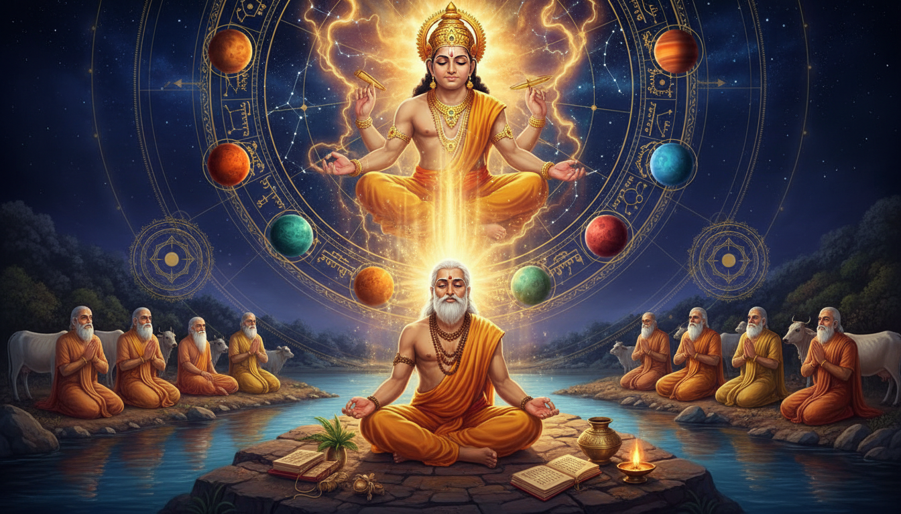

अधिकांश उपचार ऐप आपसे किसी ग्रह के साथ कोई कार्य करने को कहते हैं। पीला रत्न पहनिए। गुरुवार को जुपिटर मंत्र का जाप कीजिए। गुरुवार को मंदिर जाइए। यह लेख किसी ऐसी चीज़ के बारे में है जो अधिक अजीब है और हमारी राय में उससे अधिक उपयोगी भी।

एक वैदिक ऋषि था जिसका नाम कश्यप था, और वह उन देवताओं का जैविक पिता था जिन्हें आपकी कुंडली बीस सौ वर्षों से "जुपिटर", "राहु" और "आदित्य" कहकर बुलाती आ रही है। उन्हें उन्होंने विवाह से पिता बनाया, रूपक नहीं। और उसी जीवन में — या उन पुराणों में जिन्होंने उनके जीवन को सिला-सिलाकर हम तक पहुँचाया, उन्होंने मानव की किसी भी भाषा का सबसे प्राचीन जीवित कविता भी लिखा, जिसमें पूछा गया था कि ब्रह्मांड आया कहाँ से — और फिर एक गाय के कारण उन्हें अपना अपना नाम भी खोना पड़ा।
यह स्रोतों का अतिशयोक्ति नहीं है। यह उनका सारांश है, और इनमें से लगभग कुछ भी एक साधारण पाठक को मालूम नहीं।
यह लेख ज्योतिष का लेख इसलिए है, रूपक के कारण नहीं, क्योंकि इसमें एक तथ्य है जो इसे बाकी सबसे अलग कर देता है।
बृहत् पाराशर होरा शास्त्र में — आधुनिक ज्योतिष का वह महान् शास्त्रीय ग्रंथ जिसे अधिकांश आधुनिक चिकित्सकों ने पढ़ा है — विष्णु के दस अवतारों को नवग्रहों से यह प्रकार जोड़ा गया है:
सूर्य से राम का अवतार, चन्द्र से कृष्ण का, मंगल से नरसिंह का, बुध से गौतम बुद्ध का, **बृहस्पति से वामन का, शुक्र से परशुराम का, शनि से कूर्म (कछुआ) का, राहु से वराह (सूअर) का और केतु से मत्स्य (मछली) का अवतार हुआ। ये सब अवतार ग्रहों के माध्यम से हैं। जिनमें परमात्मा अंश अधिक है [अर्थात राम, कृष्ण, नरसिंह और वराह] वे दिव्य प्राणी कहलाते हैं।
— बृहत् पाराशर होरा शास्त्र, आर. संथनम अनुवाद (1984), अध्याय 2, श्लोक 5–7
वामन बृहस्पति का अवतार है। और वामन के पिता कश्यप हैं।
यह व्यावहारिक रूप से महत्वपूर्ण है। जब आपका बृहस्पति कष्टग्रस्त हो — अस्तमित (दोनों ग्रहों के बहुत पास), पीड़ित, ग्रह-रोग से घिरा, राहु-केतु के साथ, या बस छठ और आठवें भाव को एक साथ नीचे दबा रहा हो — तो जिस देवता से आपका सामना है, वह कोई सामान्य "गुरु" नहीं है। वह एक विशिष्ट प्राणी है, जिसका एक विशिष्ट शैशवावस्था है: हज़ार वर्ष की गर्भावस्था के बाद जन्म, छाती पर श्रीवत्स का निशान, हाथ में जलपात्र और छाता, और तीन पग ज़मीन माँगने भेजा गया — और पूरा संसार उठा ले गया।
और जिस ऋषि ने उस प्राणी को पाला, उसने उस समय तक आदित्यों, दानवों, नागों और गरुड़ — यानी दृश्य ब्रह्मांड की पूरी पंक्ति — को पिता बना दिया था।
हम ईमानदारी से तीन स्तर अलग रखेंगे, क्योंकि इन्हें मिला देना आपके प्रति अन्याय होगा:
- ऐतिहासिक और धर्मग्रंथीय अभिलेख में कश्यप, वामन और उनके नाम वाले ग्रंथों के बारे में वास्तव में क्या कहा गया है।
- शास्त्रीय ज्योतिष परंपरा उनके लिए क्या निर्धारित करती है — ऊपर दिया गया बृहस्पति मिलान, कारक सिद्धांत, उपचार-वस्तु के रूप में अवतार।
- आधुनिक अनुवृत्ति ढाँचा — ऊपर की वस्तुओं के ऊपर बनाया गया, स्पष्ट रूप से हमारा अपना बताया गया, ताकि आप बिना किसी असत्य के अभ्यास कर सकें।
आरंभ करने से पहले एक बात
दो चेतावनियाँ, सीधे और स्पष्ट रूप से।
यह चिकित्सा-सलाह नहीं है, और चिकित्सक का विकल्प नहीं है। इस लेख में कश्यप संहिता का उल्लेख है — बाल रोग, स्त्री रोग और प्रसूति पर एक प्रामाणिक आयुर्वेदिक ग्रंथ। हम यह बताते हैं कि उसमें क्या है, क्योंकि यह कश्यप को सौंपे गए सबसे चौंकाने वाले कार्यों में से एक है। हम उसकी चिकित्सा-विधियाँ यहाँ नहीं दोहराते, उसकी पुष्टि नहीं करते, और यहाँ की कोई भी बात किसी योग्य वैद्य से मिलने में देर न करवाने के लिए नहीं है — खासकर बच्चे या गर्भावस्था के मामले में। ज्योतिष के लिए: यह एक भक्ति और उपचार-ढाँचा है, आपकी वास्तविक जन्म-कुंडली पढ़ने वाले योग्य ज्योतिषी का विकल्प नहीं।
एक विधि में गिनती और समय शामिल है, और वह जानबूझकर सरल है। नीचे की किसी भी विधि में आपको कुछ खरीदने, दिनों तक उपवास करने या आग सँभालने की ज़रूरत नहीं। जहाँ किसी विधि में लौ हो, वहाँ स्थिर सतह पर दीया जलाइए, पानी और धातु का ढक्कन पास रखिए, और उसे कभी बिना निगरानी के मत छोड़िए। विधि की संरचना ही भार ढोती है, आग का आकार नहीं।
भाग एक: कश्यप वास्तव में कौन थे
वह ऋषि जो उपनिषदों से भी पुराने हैं
कश्यप को स्रोतों में हिन्दू धर्म के एक प्रशंसनीय वैदिक ऋषि और सप्तर्षियों — ऋग्वेद के सात प्राचीन ऋषियों — में से एक बताया गया है। रामायण में उन्हें अर्ष्टनेमि कहा गया है। वे बृहदारण्यक उपनिषद के उपसंहार श्लोक में सूचीबद्ध हैं — और एक ऐसे विवरण में जो सामान्य पाठ्यपुस्तक के क्रम को चुपचाप उखाड़ देता है, उन्हें श्लोक 2.2.4 में अत्रि, वशिष्ठ, विश्वामित्र, जमदग्नि, भरद्वाज और गौतम के साथ नामित किया गया है, और वे उपसंहार श्लोक 6.5.3 में सबसे प्राचीन ऋषि के रूप में नामित हैं।
इस अंतिम बिंदु पर एक पल रुकिए। कश्यप कोई देर से आया मेहमान नहीं है जिसे किसी बाद के पाठ ने पुरानी सूची में ठेस दिया हो। वे बृहदारण्यक के अपने अंतिम उपसंहार में हैं, और पहले स्थान पर। जब कोई उपनिषद अपनी सूची पर हस्ताक्षर करता है, वह सूची परंपरा का अपना बयान है कि कौन सबसे महत्वपूर्ण थे। कश्यप उस सूची में सबसे ऊपर हैं।
बंधलटा–मंकोट कार्यशाला का एक पहाड़ी चित्र, लगभग 1700 ई., जो अब चंडीगढ़ के सरकारी संग्रहालय और कला दरबार में है, सप्तर्षियों के एक प्रकार को दिखाता है:
सप्तर्षियों का एक प्रकार: विश्वामित्र (बाएँ ऊपर), जमदग्नि (मध्य ऊपर), गौतम (दाएँ ऊपर), वसिष्ठ (मध्य दाएँ, दाढ़ी रहित), कश्यप (बाएँ नीचे), भरद्वाज (मध्य नीचे, योगासन में, उल्टे), अत्रि (दाएँ नीचे)।
ध्यान दीजिए कि यह सूची — विश्वामित्र, जमदग्नि, गौतम, वसिष्ठ, कश्यप, भरद्वाज, अत्रि — अधिक परिचित ऋग्वेदिक सप्त से भिन्न है (वसिष्ठ, विश्वामित्र, अत्रि, पुलह, पुलस्त्य, मरीचि, अंगिरस, क्रतु)। सप्तर्षि एक स्थिर सूची नहीं है। वह ग्रंथों के साथ बदलता रहता है। यह जानना चाहिए, इससे पहले कि कोई आपको बताए कि सात का क्रम एकमात्र निश्चित है।
नाम का अर्थ है "कछुआ"
कश्यप का अर्थ संस्कृत में "कछुआ" है। माइकल विट्ज़ेल इसे अवस्ताई kasiiapa, सोग़दियन kyšph, कुरदिश kûsî, नवी फ़ारसी kharwar, और kaš(a)p से जोड़ते हैं — ये सब कछुए के अर्थ वाले शब्द हैं, जिनके बाद तुर्कमेनिस्तान और खोरासान की कशाफ़ रू नदी का नाम पड़ा। फ्रिट्स स्टाल भी मानते हैं कि कश्यप का अर्थ 'कछुआ' है, परंतु उनका मानना है कि यह गैर-इंडो-यूरोपीय शब्द है।
यह निरूपण एक पल के लिए रोकिए और इसे इस लेख के आरंभ में दिए गए ज्योतिष मिलान के बगल में रखिए। बृहत् पाराशर होरा शास्त्र में कूर्म, कछुआ अवतार, शनि है। जिस ऋषि का नाम शाब्दिक अर्थ से "कछुआ" है, वह बृहस्पति अवतार का पिता है — और क्षेत्र उसी ग्रन्थ में केतु का मत्स्य अवतार है, जिसका दूसरा अवतार शनि का कूर्म है।
हम इसे स्पष्ट रूप से निरूपणीय संयोग, जिसमें धार्मिक काट है, बताते हैं — सिद्धांत नहीं। कोई ग्रंथ यह नहीं कहता कि "कश्यप शनि का अवतार हैं।" परंतु जिस परंपरा ने ग्रहों को अवतारों से जोड़ा, उसने कूर्म को शनि से जोड़ा, और जिस ऋषि ने बृहस्पति का अवतार जनाया, उसका नाम उसी जीव के नाम पर था जो शनि का अवतार है। यह अर्थपूर्ण है या केवल संस्कृत शब्दशास्त्र का एक सुखद संयोग, यह निर्णय आप पर छोड़ते हैं।
ऋग्वेद मण्डल ९ और सोम यज्ञ
कश्यप को ऋग्वेद की कुछ सूक्तियाँ रचने का श्रेय दिया जाता है, मुख्यतः मण्डल ९ में। वे और उनके शिष्य-परिवार मुख्यतः सोम पवमान ("स्वयं शुद्ध होता सोम") के सूक्तियों के रचयिता हैं, जो सोम यज्ञ के एक ही क्षण का प्रतिनिधित्व करते हैं।
उस अंतिम पंक्ति को ध्यान से पढ़िए। मण्डल ९ के सोम सूक्ति वर्णनात्मक नहीं हैं। वे मिथक नहीं हैं। वे एक क्षण का — निष्कर्षण और अर्पण के क्षण — का एक सतत अभिलेख हैं, जिसे श्लोकों में फैला दिया गया ताकि वह बीत न जाए।
यह उपचार-पद्धति के लिए एक वास्तविक तकनीकी बिंदु है, और हम प्रोटोकॉल में इसकी ओर लौटेंगे। कश्यप का सबसे सुरक्षित रूप से प्रमाणित शेष कार्य एक अपुनरावर्तनीय क्षण पर एक ध्यान है। यह संयोग नहीं है। यह उस व्यक्ति का स्वभाव है।
वे आथर्ववेद (~1000 ई.पू.) की कल्पना-संबंधी सूक्तियों में से एक में, पुस्तक १९ में, उल्लिखित हैं। और उनका नाम पात्यजलि की प्राचीन भाष्य में, पाणिनि के श्लोक 1.2.64 पर, आता है — जो उन्हें व्याकरण-परंपरा में भी स्थापित करता है।
बुद्ध ने उनका नाम लिया
बौद्ध पाली कैनन के ग्रंथों में, जैसे दीघ निकाय, तेविज्ज सुत्त में बुद्ध और उस समय के वैदिक विद्वानों की चर्चा का वर्णन है। बुद्ध दस ऋषियों के नाम लेते हैं, उन्हें "प्राचीन ऋषि" कहते हैं और प्राचीन छंदों के रचयिता कहते हैं, और उन दस में से एक कस्सप है — कश्यप का पाली रूप।
अर्थात: एक ऐसा ऋषि जिसे बुद्ध ने प्रामाणिक के रूप में उद्धृत किया, जिसे पात्यजलि ने व्याकरण के उदाहरण में प्रयोग किया, और जो उपनिषद के उपसंहार में पहले स्थान पर है। यह परंपरा की कोई छोटी पगडंडी नहीं था। वह भारतीय था।
भाग दो: वह वंश जिसने उन्हें देवताओं का पिता बनाया
तेरह पत्नियाँ, या इक्कीस — ग्रंथ उत्पादक ढंग से असहमत हैं
कश्यप की वंशावली हिन्दू साहित्य के सबसे विवादित अंशों में से एक है, और वह विरोधाभास ही सबसे दिलचस्प हिस्सा है।
रामायण में वे दक्ष की आठ बेटियों से विवाहित हैं। महाभारत और विष्णु पुराण में वे तेरह बताए गए हैं। और सूचियाँ एक जैसी नहीं हैं।
विष्णु पुराण उन्हें नाम देता है: अदिति, दिति, कद्रु, दानु, अर्ष्ट, सुरसा, सुरभि, विनता, तम्रा, क्रोधवश, इरा, विश्व और मुनि।
महाभारत आंशिक भिन्न सूची देता है: अदिति, दिति, कला, दानायुस, दानु, सिंहिका, क्रोध, पृथा, विश्व, विनता, कपिल, मुनि और कद्रु।
और विद्वान वेत्तम मणि ने महाकाव्यों और पुराणों का विश्लेषण करके निष्कर्ष निकाला कि कश्यप ने इक्कीस महिलाओं से विवाह किया होगा — दक्ष की तेरह बेटियों के अतिरिक्त पुलोमा, कलका, नात, दानायुस, सिंहिका, प्रधा, विश्व और कपिल।
वह प्रगति फिर से पढ़िए। आठ। तेरह। इक्कीस। और अंतर निरर्थक प्रतिस्थापन नहीं हैं — महाभारत की सूची में कपिल है (जिसके कार्य को कपिल संहिता सहेती है) जहाँ विष्णु पुराण की सूची में अर्ष्ट है, और उसमें सिंहिका और दानायुस अतिरिक्त हैं।
आप एक ऐसी परंपरा देख रहे हैं जिसने ऋषि के घर के बच्चे बढ़ाते गई — सदियों के पार — और हर अतिरिक्त जोड़ के साथ एक नई वंश-शाखा आई। अधिकांश मिथकों का काम इसके विपरीत होता है। अधिकांश ब्रह्मांड-कथा कुछ नामित अभिनेताओं तक सिकुड़ती हैं। यह फैलती है। और ठीक इसीलिए कश्यप अंततः वह बिंदु बन जाता है जहाँ सौर-वंश, सौर-विरोधी वंश, सर्प-वंश और सूअर-वंश — सब मिलते हैं।
हर विवाह से क्या पैदा हुआ
कश्यप को श्रेय दिया जाता है कि दक्ष की विभिन्न बेटियों से उन्होंने देवताओं, दानवों, यक्षों, दैत्यों और सभी प्राणियों को जन्म दिया। अंतिम वाक्य पर ध्यान दीजिए। वह किसी एक पक्ष के संस्थापक नहीं हैं। वह सब कुछ के संस्थापक हैं, और प्रकाश-अंधकार का विभाजन उनके घर के भीतर होता है।
ठोस रूप में:
अदिति से उन्हें आदित्य हुए — सौर देवता। विष्णु पुराण साफ़ कहता है: "इस वर्तमान मन्वन्तर में विष्णु पुनः वामन के रूप में जन्मे, जो कश्यप और अदिति के पुत्र थे। तीन पगों से उन्होंने तीनों लोकों को जीत लिया।"
दिति से उन्हें असुर हुए — देव-विरोधी, दानव और दैत्य, हिरण्यकशिपु समेत। भविष्य पर्व का वृत्तांत, जो वामन लेख पर उद्धृत है, बिना किसी संकोच के कहता है: "अदिति से देव (वामन सहित), दिति से असुर और दानु से दानव जन्मे; ये सब कश्यप की पत्नियाँ हैं।"
कद्रु से उन्हें नाग हुए — सर्प-वंश, जो ज्योतिष मिलान में उन्हें राहु और केतु से जोड़ता है।
सुरभि से उन्हें दिव्य पशुओं की गोधन-वंश आई।
विनता से उन्हें गरुड़ हुआ, वह पक्षी जो विष्णु को वहन करता है।
अर्ष्ट से उन्हें वह पुत्र हुआ जिसे रामायण में अर्ष्टनेमि कहा गया — यानी कश्यप स्वयं दूसरे नाम से।
और विष्णु पुराण के दो असंगत संस्करणों में वामन, विष्णु का एक अवतार, अदिति और कश्यप का पुत्र है।
रुकिए और इस आकार को देखिए। बृहस्पति-अवतार का पिता नाग-वंश (राहु) का भी पिता है, और वही अवतार उसी की दूसरी पत्नी के पौत्र को हराने वाला है। वामन बलि को पराजित करता है, और बलि कश्यप का पौत्र है। जुपिटर का अवतार, कश्यप का पुत्र, कश्यप की दूसरी पत्नी के पौत्र को विनीत करता है। यह पुरुष अपनी ही कहानी के एक ही युद्ध में दोनों ओर खड़ा है।
किसी भी कुंडली पर काम करने वाले के लिए यह तुच्छ तथ्य नहीं है। यही कारण है कि कश्यप से लिया गया कोई उपचार वैध रूप से जुपिटर की समस्या और नोड की समस्या — दोनों को एक साथ — छू सकता है, और यही कारण है कि इन दोनों को साफ़-सुथरे से अलग नहीं किया जा सकता।
सप्तर्षि और सात तारे
महर्षि प्रविष्टि यह संबंध आकाश के साथ साफ़ कहती है:
वैकल्पिक अर्थ महर्षि को एक सामूहिक नाम के रूप में वर्णन करते हैं जो ऋग्वेद और पुराणों में उद्धृत सात ऋषियों अर्थात सप्तर्षियों (महर्षि भृगु सहित) को संदर्भित करता है, अथवा वैदिक लेखों में वर्णित उन अनेक पौराणिक ऋषियों में से किसी को संदर्भित करता है जो महान् सप्तर्षि तारामंडल से संबद्ध हैं।
सात ऋषि। सात तारे। महान् सिंह — बिग डिप्पर — ही सप्तर्षि हैं।
यह इस पूरे लेख के लिए, किसी भी ट्रांज़िट ट्रैकर के लिए, सबसे व्यावहारिक रूप से उपयोगी बात है, और हम इसे प्रोटोकॉल तीन में उचित महत्व देते हैं। अभी केवल इतना नोट कर लीजिए कि कश्यप इन सात में हैं, और संस्कृत आकाश में सात वह भी एक नक्षत्र हैं जिसे आप उँगली से दिखा सकते हैं।
भाग तीन: उपलब्धि — बृहस्पति के अवतार के पिता
पाठ
बृहत् पाराशर होरा शास्त्र के मिलान को पुनः परिवार-वृक्ष के साथ पढ़िए:
| ग्रह | अवतार | कश्यप का संबंध |
|---|---|---|
| सूर्य | राम | — |
| चन्द्र | कृष्ण | पुत्र (पुनर्जन्म के रूप में वसुदेव बनकर — भाग सात देखिए) |
| मंगल | नरसिंह | — |
| बुध | गौतम बुद्ध | — |
| बृहस्पति (गुरु) | वामन | पिता |
| शुक्र | परशुराम | — |
| शनि | कूर्म (कछुआ) | केवल निरूपणीय संपर्क |
| राहु | वराह (सूअर) | नागों के माध्यम से पितामा (कद्रु) |
| केतु | मत्स्य (मछली) | — |
उस तालिका में दो प्रविष्टियाँ कश्यप की रक्त-रेखा से हैं। बृहस्पति उनका पुत्र है। राहु उनके पोत्र की वंश है। यही कारण है कि इस श्रृंखला में पहले के किसी भी उपचार-लेख ने उन्हें इस्तेमाल नहीं किया जा सकता था: बृहस्पति अब तक वह एक ग्रह था जिसके अवतार के लिए सूची में कोई ऋषि-पिता उपलब्ध नहीं था। परशुराम ने शुक्र ले लिया। बृहस्पति का स्थान खाली था।
बृहस्पति टूटा हो तो उसका अर्थ क्या है
बृहत् पाराशर होरा शास्त्र, अध्याय 3, श्लोक 12–15, ग्रहों पर:
सूर्य सबका आत्मा है। चन्द्र मन है। मंगल बल है। बुध वाक्-दाता है और बृहस्पति ज्ञान और सुख प्रदान करता है। शुक्र वीर्य (शक्ति) का स्वामी है और शनि शोक का सूचक है। सूर्य और चन्द्र राजसत्ता के हैं, मंगल सेनापति है। बुध राजकुमार है। बृहस्पति और शुक्र मंत्रिपाल हैं। शनि सेवक है। राहु और केतु ग्रह-सेना बनाते हैं।
यहाँ दो पंक्तियाँ काम करती हैं। "बृहस्पति ज्ञान और सुख प्रदान करता है।" और बृहस्पति मंत्री ग्रह है — दूसरे स्थान पर, राजा के सर्वनिकट। यह उच्च-पद ग्रह है। जिस कुंडली में बृहस्पति कष्टग्रस्त हो, वह कुंडली इस बात का है कि मंत्री को हटा दिया गया, जेल में डाल दिया गया, सूर्य के अत्यधिक निकट होने से अंधा कर दिया गया, या गलत प्रांत में भेज दिया गया।
इसलिए जब हम "बृहस्पति का उपचार" कहते हैं, तो हम कोई सामान्य शुभ-लाभ-चिट्ठा नहीं बता रहे। हम एक बहुत निश्चित कार्य-विफलता बता रहे हैं:
- बृहस्पति अस्तमित (सूर्य के बहुत पास) — मंत्री अदृश्य है, सलाह नहीं दे सकता, गवाही नहीं दे सकता।
- बृहस्पति पीड़ित (मीन राशि में, उसकी पीड़ित राशि) — मंत्री गलत न्यायालय पहुँचता है और पहचाना नहीं जाता।
- बृहस्पति षष्ठ, अष्टम या द्वादश भाव में — मंत्री शत्रु-गृह, संकट-गृह या हानि-गृह में है।
- बृहस्पति के साथ राहु या केतु — और यहाँ कश्यप का संबंध बहुत शाब्दिक हो जाता है, क्योंकि राहु की वंश कश्यप की विवाह-पुत्री से चलती है। बृहस्पति-अवतार और राहु-अवतार का एक ही संस्थापक है।
- बृहस्पति लग्नेश 6वें या 8वें भाव में — राजा स्वयं बीमार है।
- बृहस्पति की दशा लंबे समय तक बिना विरोध के चलना — क्योंकि बृहस्पति धीमा और दीर्घ है, बृहस्पति की महादशा जीवन की नीति है, मूड नहीं। उसे सहने नहीं, प्रबंधित करना पड़ता है।
उनमें से हर एक शास्त्रीय उपचार-ढाँचे में वह स्थिति है जहाँ आप एक देवता के पास जाते हैं। और बृहस्पति के लिए उस देवता का अब नाम और परिवार है।
देवता के पीछे का अनुशासन
एक और आधार-निर्धारण, क्योंकि यह महत्वपूर्ण है कि यह एक अनुशासन है, कोई कल्पकथा नहीं। ज्योतिष हिन्दू अथवा वैदिक ज्योतिष का संदर्भ है, छः वेदाङ्गों में से एक — वेदों से जुड़े सहायक शास्त्र — और इसके पीछे का संग्रह उसी तरह बना था जैसे वैज्ञानिक संग्रह बनते हैं: प्रतिस्पर्धी सिद्धान्तों के माध्यम से, प्रत्येक ग्रहों की गति पर एक निश्चित अवधान लिए हुए ग्रंथ के रूप में, जिनकी परख अवलोकन से की गई। वराहमिहिर ने अपने समय के पाँच व्यवस्थित सिद्धान्तों को पञ्च-सिद्धान्तिका में संग्रहित किया, "पञ्च ग्रंथ"; रोमक सिद्धान्त और पौलीश सिद्धान्त उन पाँच में थे; और गार्गी-संहिता, यवनों को विदेशी कहते हुए भी उनके विज्ञान को उन्नत बताकर, उसी ढाँचे में बैठती है।
सिद्धान्त-काल के अंत तक गणितज्ञ और खगोलविद् भास्कर ने उत्तराध्याय, अर्थात "उत्तरी पाठ", लिखा; और आमेर के जयसिंह द्वितीय ने अपने दिन के ग्रह-स्थितियाँ असंतोषजनक पाईं, तो भारत में पत्थर और धातु से बने विशाल वेधशालाएँ — यन्त्र मन्दिर — बनाईं, और पुरी के जगन्नाथ मंदिर के लिए पथानी समन्त का सिद्धान्त दर्पण अपनी पंचांग माना।
यह इस शेष लेख के लिए क्यों महत्वपूर्ण है: परंपरा ग्रहों के अवतारों से जोड़ने में सक्षम थी इसलिए कि उसके पास ग्रह क्या हैं यह तय करने की एक व्यवस्थित उपकरण-पद्धति थी — और वह उपकरण आकाश के विरुद्ध जाँचा गया, विफल होने पर सुधारा गया, और फिर से बनाया गया। अवतार-सारणी उस उपकरण की एक कोष्ठिका है, कोई मुक्त प्रवाहित अलंकार नहीं। और हम इस पर उपचार-प्रोटोकॉल इसलिए जिम्मेदारी से बना सकते हैं क्योंकि परंपरा ने स्वयं देवता को एक मापने योग्य चक्र से जोड़ा: बृहस्पति का बारह-वर्षीय संचार, सप्तर्षि की दशम-गृह स्थिति, बारहवीं तिथि, सूर्य के दिन के तीन स्थान।
पिता का महत्व क्यों है
अवतार-उपचार-ढाँचे में आप अवतार के पास जाते हैं — उस प्राणी के पास जिसने वह कार्य किया जिसका आप परिणाम चाहते हैं। वामन का कार्य स्पष्ट और अत्यंत विशिष्ट है:
वह हारे हुए राजा के पास, जिसने अभी-अभी स्वर्ग जीत लिया था, घोड़े के यज्ञ के बीच खड़ा हुआ और तीन पग ज़मीन माँगा। राजा खुशी से मान गया, क्योंकि यह छोटी-सी माँग थी। तब वामन त्रिविक्रम रूप धारण करता है और भूलोक, देवलोक और पाताल को तीन पगों में कवर कर लेता है। जब बलि को पता चलता है कि क्या हुआ, तो वह तीसरे पग के लिए अपना सिर प्रस्तुत करता है, और उसे स्वीकार करके वामन बलि को अमरत्व और पाताल पर राज्य प्रदान करता है — तथा बलि को वह वरदान देता है कि वह वर्ष में एक बार पृथ्वी पर लौटे।
वह अंतिम उपसंहार भावनात्मक रूप से महत्वपूर्ण है, और यही कारण है कि यह देवता बृहस्पति के लिए काम करता है। वामन असुर-राजा का वध नहीं करता। वह उसका सिर लेता है, उसकी आत्मसमर्पण स्वीकार करता है, और उसे उसकी दुनिया वापस दे देता है। विजय पूर्ण है और शत्रु का विनाश नहीं होता। बहाल किया गया व्यक्ति वार्षिक रूप से लौटता है।
इसे उपचार के रूप में पढ़िए। बृहस्पति गुरु, धर्म, संतान, पति, ज्ञान, सुख, मंत्री, पिता का ग्रह है। जब वह टूटा हो, तो शास्त्रीय प्रश्न यह नहीं है कि "मैं उस चीज़ को कैसे हराऊँ जो मुझे रोक रही है।" यह प्रश्न है: "मैं वह ज़मीन कैसे वापस लूँ जो मैंने खोई, और मैं उस पराजित-के-साथ संबंध को जीवित कैसे रखूँ?" वामन का प्रोटोकॉल ठीक यही उत्तर देता है।
और भविष्य पर्व का वृत्तांत इसे पिता की कहानी बनाता है, अवतार की नहीं। जब देवताओं को बलि ने हरा दिया, तो वे अपनी माता अदिति के पास गए, जिसने कहा:
केवल सहस्रशिर पुरुष ही उसे मार सकता है, और कोई और नहीं।
तब वे कश्यप के पास गए, जिन्होंने उन्हें ब्रह्मलोक ले जाकर ब्रह्मा से मिलवाया। ब्रह्मा ने उन्हें विष्णु की शरण जाने की सलाह दी। वे "अमृत नामक स्थान पर, समुद्र-क्षीर के उत्तरी तट पर" पहुँचे, और "सूरों के साथ कश्यप ने अनेक वर्षों तो कठिन तपस्या की, जिसका उद्देश्य सहस्रनेत्र बुद्धिमान योगी नारायण को प्रसन्न करना था।"
देवता स्वयं इसे ठीक नहीं कर सकते थे। वे अपनी माता के पास गए। उन्होंने अपने पिता को भेजा। पिता ने लड़ाई नहीं की। पिता ने तपस्या की, और संसार का सुधार पिता की अनुशासन का परिणाम हुआ, अपने ही परिवार का चेहरा धरकर।
यही तंत्र है। कश्यप की उपलब्धि यह नहीं कि उन्होंने जीता। यह है कि उन्हें पूछा जा सकता था, और उन्होंने उस स्थिति को बहस में नहीं, तपस्या में बदल दिया। उपचार के अर्थ में: ग्रह की समस्या को गुरु के कार्य — बृहस्पति पिता के रूप में, उसके रूप में जो सिखाता है — द्वारा सुलझाया गया, बल से नहीं। जिस कुंडली में बृहस्पति 8वें या 12वें भाव में कष्टग्रस्त हो, उसके लिए यह वही उपचार-पैटर्न है जिसे परंपरा स्वीकार करती है।
देवता का विवरण, सटीक रूप से
वामन के स्रोतों से:
- पिता: कश्यप। माता: अदिति। भाई: इंद्र और आदित्य।
- नाम का अर्थ: "बौना", "छोटा", "छोटा या नीचा कद" — और "नन्हा बैल", जो उल्लेखनीय है क्योंकि विष्णु का वेदों में सीधे नन्हे पशुओं (बैल समेत) से संबंध है।
- उपाधियाँ: त्रिविक्रम — "तीन पग" या "तीन कदम" (त्रि + विक्रम); उपमित्र; और "इंद्र का छोटा भाई / इंद्र से श्रेष्ठ" अथवा "एक पुत्र", जो बारह आदित्यों में से एक के रूप में उत्पत्ति का सूचक है।
- प्रतीक: कमण्डलु (जलपात्र) और छाता; तथा एक गोल, छोटा शालिग्राम पत्थर।
- मंत्र:
ॐ त्रिविक्रमाय विद्महे / विश्वरूपाय च धीमहि / तन्नो वामन प्रचोदयात्
- जन्म: अदिति की हज़ार वर्ष की गर्भावस्था के बाद; शिशु की आँखें अन्याय के बादलों जैसे लाल थीं, वह बौने रूप का था, और उसकी छाती पर श्रीवत्स का चिह्न था।
- कथा वेदों में ऋग्वेद 1.154 तथा अन्य वैदिक और पौराणिक ग्रंथों में आती है।
तीन पग, और वह विद्वान जिसने उन्हें नाम दिया, आपके बारे में ही बात कर रहा था
तीन पगों की तीन व्याख्याएँ प्रचलित हुई हैं, और तीनों सीधे उपयोगी हैं।
रॉय ने ऋग्वेदिक अंशों को "निस्पित रूप से उस नाभिका की, जिससे क़बीर रूप की कथा बनी," पढ़ा और टिप्पणी की कि विष्णु के तीन पगों को "सूर्य के उदय, उच्च और अस्त के तीन भिन्न स्थानों के प्रतीक के रूप में व्याख्या किया गया है।"
चंदा ने उन्हें अस्तित्व की तीन अवस्थाएँ — जागृत (जागना), स्वप्न (स्वप्न-निद्रा), और सुषुप्ति (गहरी निद्रा) — के रूप में पढ़ा, और बताया कि बलि के सिर पर रखा गया अंतिम पग "मोक्ष का और इन अवस्थाओं के अतिक्रमण का प्रतीक है।"
मैकडोनेल ने इस लक्षण को और पीछे खोजा: "उन्होंने तीन बार पृथ्वी के आकाशों को मनुष्य के कष्ट के लिए पार किया (6, 49); उन्होंने पृथ्वी को मनुष्य को उसके निवास के लिए प्रदान करने के लिए पार किया (7, 100); उन्होंने विस्तृत-चरण अस्तित्व के लिए पृथ्वी आकाशों को पार किया (1, 155); इंद्र के साथ उन्होंने विशाल पग किए और हमारे अस्तित्व के लिए संसार को खींचा (6, 69)।"
और एक चौथा धागा, अनुष्ठान-संदर्भ से: तीन पगों का उल्लेख यज्ञ-भूमि को अभिषेक करने के संदर्भ में मिलता है — राक्षसों को भगाने और अभ्यासी की अपनी शक्ति को पक्का करने के लिए — साथ ही दर्शपूर्णमासेष्टी, नव और पूर्ण-मास के यज्ञों के संदर्भ में भी।
तो तीन पग एक साथ हैं: दिन के तीन समय, चेतना की तीन अवस्थाएँ, और प्रतिकूल प्रभाव के विरुद्ध भूमि के तीन अभिषेक। इन पर बना उपचार एक चुनना नहीं चाहिए। उसे तीनों एक साथ करना चाहिए। यही प्रोटोकॉल एक है।
एक परंपरागत-पार-विश्व टिप्पणी, जो रखने लायक है
बुद्ध की अपनी मिथक-परंपरा में ढाँचा-गत रूप से एक ही आकृति मौजूद है। वामन पर शोध के साहित्य में जैसा दर्ज है, "थेरवाद परंपरा की ब्रह्मांड-कथा और ब्रह्मांड-विज्ञान कहती है कि बुद्ध ने तीन पगों में 6,800,000 योजन का विस्तार किया, पृथ्वि से स्वर्ग तक, और फिर अपना दायाँ पैर युगंधरा पर रखा — जो हिन्दू धर्म में वामन अवतार की कथा के समानांतर है।"
दो परंपराएँ, एक आकार: एक बौना जो तीन पग लेकर ब्रह्मांड को ढक लेता है, और जिसने हारे हुए राजा को उसकी दुनिया वापस दे दी। यदि आप दोनों ढाँचों के साथ काम करते हैं, तो आपको वही औज़ार दो बार मिला है।
भाग चार: सृष्टि का गीत
हमारे पास सबसे प्राचीन कविता
नसदीय सूक्त — "सृष्टि-गीत" — ऋग्वेद 10.129 है। यह किसी भी मानव भाषा की लगातार सकिटाई गई सबसे प्राचीन कविताओं में से है, और यह ऋग्वेद की सृष्टि तथा यह जानने की कि क्या कोई उत्तर जान सकता है — इसके केंद्र में है।
यहाँ पाठ है, उस रूप में जिसे संदर्भ लेख "English (Basham 1954)" के अंतर्गत देता है — ए. एल. बशम, द वंडर दैट वाज़ इंडिया (1954) — संस्कृत पाठ और मीट्रिक पुनर्स्थापना थॉमसन व स्लोकम के ऋग्वेद: ए मेट्रिकली रीस्टोर्ड टेक्स्ट (1994) से देखकर:
नास॑दासी॒न्नो सदा॑सीत्त॒दानीं॒ नासी॒द्रजो॒ नो व्यो॑मा प॒रो यत् ।
किमाव॑रीव॒: कुह॒ कस्य॒ शर्म॒न्नम्भ॒: किमा॑सी॒द्गह॑नं गभी॒रम् ॥१॥
न मृ॒त्युरा॑सीद॒मृतं॒ न तर्हि॒ न रात्र्या॒ अह्न॑ आसीत्प्रके॒तः ।
आनी॑दवा॒तं स्व॒धया॒ तदेकं॒ तस्मा॑द्धा॒न्यन्न प॒रः किं च॒नास॑ ॥२॥
तम॑ आसी॒त्तम॑सा गू॒ळ्हमग्रे॑ऽप्रके॒तं स॑लि॒लं सर्व॑मा इ॒दम् ।
तु॒च्छ्येना॒भ्वपि॑हितं॒ यदासी॒त्तप॑स॒स्तन्म॑हि॒नाजा॑य॒तैक॑म् ॥३॥
काम॒स्तदग्रे॒ सम॑वर्त॒ताधि॒ मन॑सो॒ रेत॑: प्रथ॒मं यदासी॑त् ।
स॒तो बन्धु॒मस॑ति॒ निर॑विन्दन्हृ॒दि प्र॒तीष्या॑ क॒वयो॑ मनी॒षा ॥४॥
ति॒र॒श्चीनो॒ वित॑तो र॒श्मिरे॑षाम॒धः स्वि॑दा॒सी३दु॒परि॑ स्विदासी३त् ।
रे॒तो॒धा आ॑सन्महि॒मान॑ आसन्त्स्व॒धा अ॒वस्ता॒त्प्रय॑तिः प॒रस्ता॑त् ॥५॥
को अ॒द्धा वे॑द॒ क इ॒ह प्र वो॑च॒त्कुत॒ आजा॑ता॒ कुत॑ इ॒यं विसृ॑ष्टिः ।
अ॒र्वाग्दे॒वा अ॒स्य वि॒सर्ज॑ने॒नाऽथा॒ को वे॑द॒ यत॑ आब॒भूव॑ ॥६॥
इ॒यं विसृ॑ष्टि॒र्यत॑ आब॒भूव॒ यदि॑ वा द॒धे यदि॑ वा॒ न ।
यो अ॒स्याध्य॑क्षः पर॒मे व्यो॑म॒न्त्सो अ॒ङ्ग वे॑द॒ यदि॑ वा॒ न वेद॑ ॥७॥
(संस्कृत पाठ संदर्भ लेख से यथावत लिया गया है; अंग्रेज़ी अनुवाद इस प्रकार है —)
1. Then even non-existence was not there, nor existence,
There was no air then, nor the space beyond it.
What covered it? Where was it? In whose keeping?
Was there then cosmic fluid, in depths unfathomed?
2. Then there was neither death nor immortality
nor was there then the torch of night and day.
The One breathed windlessly and self-sustaining.
There was that One then, and there was no other.
3. At first there was only darkness wrapped in darkness.
All this was only unillumined cosmic water.
That One which came to be, enclosed in nothing,
arose at last, born of the power of knowledge.
4. In the beginning desire descended on it —
that was the primal seed, born of the mind.
The sages who have searched their hearts with wisdom
know that which is, is kin to that which is not.
5. And they have stretched their cord across the void,
and know what was above, and what below.
Seminal powers made fertile mighty forces.
Below was strength, and over it was impulse.
6. But, after all, who knows, and who can say?
Whence it all came, and how creation happened?
the gods themselves are later than creation,
so who knows truly whence it has arisen?
7. Whence all creation had its origin,
the creator, whether he fashioned it or did not,
the creator, who surveys it all from highest heaven,
he knows — or maybe even he does not know.
एक ईमानदार टिप्पणी, आगे बढ़ने से पहले। हमारे कैश किए गए स्रोत दो संबंधित दावों का समर्थन करते हैं, और वे एक ही दावा नहीं हैं। पहला, ऋग्वेद लेख कश्यप को ऋग्वेदिक सूक्तियों के प्रसिद्ध रचयिताओं में गिनाता है — "अन्य प्रसिद्ध रचयिताओं में अत्रि, भृगु, कश्यप, घृतसमद, अघस्त्य, भरद्वाज, तथा महिला ऋषियों लोपामुद्रा और घोषा हैं" — और साथ ही सावधान कराता है कि "कुछ मामलों में एक से अधिक ऋषि दिए गए हैं, जो निश्चिता की कमी का सूचक है।" दूसरा, कश्यप लेख कहता है कि वे "ऋग्वेद की कुछ सूक्तियाँ रचने के श्रेयपूर्ण माने जाते हैं, मुख्यतः मण्डल ९ में," और कि "आथर्ववेद (~1000 ई.पू.) की कल्पना-संबंधी सूक्तियों में से एक में — कथा-सूक्ष्म बहुलता से भरे पुस्तक १९ — कश्यप का उल्लेख है।"
हमारे कैश किए गए स्रोत नहीं करते कि 10.129 का नाम स्पष्ट रूप से कश्यप से जोड़ा जाए। सृष्टि-गीत को उनका मानना ऋग्वेद-पाठ की एक लंबी परंपरा है, और हम इसे तथ्य के रूप में प्रस्तुत करने के बजाय परंपरा के रूप में स्पष्ट रूप से चिह्नित करते हैं — क्योंकि इस भाग का पूरा तर्क इसी पर टिका है, और आपको अपने पैरों के नीचे की ज़मीन कितनी मज़बूत है, यह आपको दिखना चाहिए। मज़बूत: कश्यप ऋग्वेदिक रचयिता के रूप में, और कश्यप का नाम एक वैदिक कल्पना-सूक्ति में। कमज़ोर: यह विशेष सूक्त उनका।
यह गीत उपचार-लेख में क्यों आता है
इस पाठ की तीन बातें इसे सजावटी कविता नहीं, बल्कि एक उपकरण बनाती हैं।
पहला, यह अनिश्चितता में समाप्त होता है। श्लोक ७ कहता है कि सृजनकर्ता "वह निश्चित जानता है — या शायद वह जानता भी नहीं।" श्लोक ६ कहता है "देवता भी सृष्टि के बाद के हैं।" यह भक्ति-आत्मविश्वास नहीं है। यह ऐसा पाठ है जो ज्ञान की सीमा को अपनी अंतिम साँस में केंद्र में रखता है। उपचार-ढाँचे में, यह अभ्यासी की मनोवस्था के बारे में एक सटीक निर्देश है: आप अपनी स्थिति के उद्भव का नियंत्रण करने का नाटक नहीं कर रहे। आप उस हिस्से पर काम कर रहे हैं जो आपको सौंपा गया था। कश्यप की अपनी उपलब्धि ठीक यही मनोवस्था है — उसने ब्रह्मांड नहीं सुलझाया, उसने तीन पग ज़मीन वापस ली।
*दूसरा, श्लोक ४ इच्छा को सबसे पहले रखता है। "In the beginning desire descended on it — that was the primal seed, born of the mind." न पदार्थ। न प्रकाश। इच्छा, मन से उत्पन्न, प्राथमिक बीज के रूप में। ज्योतिष के ढाँचे में मन है चन्द्र — "सूर्य सबका आत्मा है। चन्द्र मन है।" तो इस पाठ के अनुसार ब्रह्मांड का प्रथम सृजन-सिद्धांत एक मानसिक सिद्धांत है जो एक बीज* है। और कश्यप को सोम पवमान के सूक्तियों का श्रेय दिया जाता है — सोम चन्द्र-देव, यज्ञ का पेय, और वनस्पति। वही ऋषि जिसने मण्डल ९ के सोम सूक्ति रचे, वही सृष्टि-गीत लिखने वाला ऋषि है जिसमें इच्छा प्राथमिक बीज है और मन वहाँ से शुरू होता है।
तीसरा, श्लोक ५ एक अनुष्ठान-निर्देश है। "And they have stretched their cord across the void, and know what was above, and what below." रज्जू — नापने की रस्सी — खाली स्थान के आर-पार फैलाकर एक कार्य-चतुर्भुज स्थापित करना। यह वास्तु मंडल की तकनीक है — ग्रिड, रस्सी, केंद्र में ब्रह्मस्थान। यह यंत्र की विधि भी है। सृष्टि-गीत, शाब्दिक अर्थ में, वर्णन करता है कि कैसे कुछ भी न होते हुए एक पवित्र आकृति बनाई जाती है।
इसीलिए यह गीत और यह घर एक ही लेख में आते हैं। कश्यप ने वह गीत लिखा जो भूमि बनाने का वर्णन करता है, और उनकी संहिता में वह ग्रंथ है जो बताता है कि भूमि कैसे बनाई जाती है।
भाग पाँच: अल्प-प्रसिद्ध संहिता — पाँच ग्रंथ जिन्हें कोई नहीं पढ़ता
यहाँ कश्यप का वह हिस्सा है जो लगभग पूरी तरह भूला दिया गया है, और यह पूरे लेख का सबसे तुरंत उपयोगी सामग्री है।
१. कश्यप संहिता (जिसे वृद्ध जीवकीय तंत्र भी कहते हैं)
कश्यप को सौंपा गया एक आयुर्वेद परिच्छेद, जो भारतीय चिकित्सा की सबसे प्राचीन संहिताओं में गिना जाता है — सुश्रुत संहिता, चरक संहिता, भेल संहिता और हारीत संहिता के साथ। यह आयुर्वेदिक चिकित्सक चरक के कार्यों पर निर्भर है। इसका संशोधन वात्स्य ने किया।
संरचना चकित करने वाली है: २०० अध्याय, नौ खंडों में — सूत्र स्थान (३०), निदान स्थान (८), विमान स्थान (८), शरीर स्थान (८), इन्द्रिय स्थान (१२), चिकित्सा स्थान (३०), सिद्धि स्थान (१२), कल्प स्थान (१२), और खिल भाग (८०)।
यह वैद्यक ऋषि कश्यप और उनके शिष्य वृद्धजीवक के बीच एक संवाद के रूप में लिखा गया है — इसीलिए इसे वृद्ध जीवकीय तंत्र भी कहा जाता है। इसका अधिकांश भाग शिशुओं की देखभाल और बच्चों के रोगों से संबंधित है।
आधुनिक आयुर्वेदिक अभ्यास में इसका संदर्भ प्रायः बाल रोग, स्त्री रोग और प्रसूति के क्षेत्रों में लिया जाता है। मध्यकाल में इसका चीनी भाषा में अनुवाद हुआ। यह आयुर्वेद पाठ्यक्रम का हिस्सा है, विशेषतः कौमारभृत्य बालरोग में — और बालरोग विभाग, काशी हिन्दू विश्वविद्यालय के संस्थान चिकित्सा विज्ञान संस्थान, की बालरोग सूची में प्रमुख शास्त्रीय संदर्भों में गिना जाता है।
अब इसे ज्योतिष-ढाँचे से जोड़िए और कुछ कठोरता से बैठता है। बृहस्पति संतान का कारक है। ज्योतिष की प्रत्येक शास्त्रीय ग्रह-निर्धारण-पद्धति में बृहस्पति पुत्र-कारक है — पुत्रों, संतान, गुरु, शिष्य, पति, धर्म, धन और अभ्येय का सूचक। और जिस ऋषि ने बृहस्पति का अवतार जनाया, उसने बच्चों को बचाने का मूलभूत ग्रंथ भी लिखा — सिद्धि (१२ अध्याय, सिद्धि और उचित अवस्था-प्राप्ति पर) और कल्प (१२ अध्याय, कार्यों के शुभ समय पर) के समर्पित अध्यायों सहित।
यदि आपकी कुंडली में बृहस्पति परेशान है, तो यह संयोग नहीं है जिसे टिप्पाकर छोड़ देना चाहिए। वही वंश चिकित्सा-निर्देश भी उत्पन्न किया। प्रोटोकॉल चार ठीक इसी पर बना है।
(और ज़ोर देकर: यह उस ग्रंथ में क्या है, इसका वर्णन है। यह चिकित्सा-विधि नहीं है, और योग्य वैद्य का विकल्प नहीं है। कल्प स्थान और सिद्धि स्थान किसी विशिष्ट चिकित्सा-कार्य के समय और विधि से संबंधित हैं, और वे कार्य प्रशिक्षित हस्त में ही रहते हैं।)
२. कश्यप ज्ञानकाण्ड
वैष्णव परंपरा का नववीं-शताब्दी का ग्रंथ, जिसे कश्यप का ज्ञान-ग्रंथ भी कहा जाता है। न कॉस्मोलॉजी, न अनुष्ठान-पुस्तिका — एक ज्ञान ग्रंथ। ऋग्वेदिक सूक्तियों के डेढ़ हज़ार वर्ष बाद आया हुआ शिक्षण-काय, फिर भी कश्यप के नाम पर।
३. काश्यप धर्मसूत्र
संभवतः प्राचीन ग्रंथ, परंतु अब माना जाता है कि यह नष्ट हो चुका है; इसकी विद्यमानता मध्यकालीन भारतीय विद्वानों के उद्धरणों और संदर्भों से अनुमानित की जाती है। इस आकार पर ध्यान दीजिए: हमें जानकारी है कि यह इतना महत्वपूर्ण था कि बाद के लेखकों ने इसका उद्धरण दिया, और यह बचा नहीं। यह कश्यप की संहिता के कितने कितने हिस्से गायब हैं, इसका सबसे साफ़ उदाहरण।
४. काश्यपसंगीत
संभवतः एक और प्राचीन ग्रंथ, अब माना जाता है कि यह नष्ट हो चुका है — परंतु यहाँ निशान संगीत-संबंधी हैं, विधिक नहीं। यह संगीत पर एक ग्रंथ था, जिसका उद्धरण शैव और अद्वैत विद्वान अभिनवगुप्त ने किया, और जिसमें ऋषि कश्यप का रस और भाव के विनियोग पर व्याख्या दी गई है। अन्य हिन्दू संगीत-विद्वान हृदयाङ्गम कश्यप के योगदान का उल्लेख अलंकार — संगीत-स्वर-सज्जा — के सिद्धांत के संदर्भ में करते हैं।
यह एक बात आसानी से छूट जाती है और देखते ही रह जाती है। बृहस्पति-अवतार के पिता ने सौंदर्य-भाव के सिद्धांत की सबसे पहली छाया छोड़ी — कि रस कैसे प्रयुक्त होता है, कि भाव कैसे सजाया जाता है, कि भावना को किसी रूप में कैसे बाँधा जाता है। यह वही है जो मंडल ९ के सोम सूक्तियाँ रचने वाला ऋषि रहा होगा। सोम सूक्ति वर्णनात्मक नहीं हैं। वे रस को तैयार करती हैं और उसे धारण करती हैं।
५. कश्यपशिल्प (जिसे आमसूद आगम, कास्यपीय या काश्यप का शिल्पशास्त्र भी कहते हैं)
वास्तुकला, मूर्तिकला और अलंकार-कला पर एक संस्कृत ग्रंथ, जो संभवतः ग्यारहवीं शताब्दी में पूर्ण हुआ।
यही वह है जो अनुष्ठान-द्वार खोलता है। शिल्प रूप का विधान है: मूर्ति की नाप, मंदिर का माप, देवता की प्रतिमा का सही निर्माण — ताकि वह केवल चित्र न हो, बल्कि उपस्थिति हो। शिल्प-शास्त्र बताता है कि कोई वस्तु प्रभावी बनने के लिए कैसी दिखनी चाहिए।
तो: कश्यप का नाम जुड़ा है उस पुस्तिका से जो वह मूर्ति बनाने के लिए है जिसकी आप पूजा करेंगे। वास्तु परंपरा के साथ जहाँ मण्डुक वास्तु पुरुष मण्डल हिन्दू मंदिरों के लिए 8×8 (६४) ग्रिड विन्यास है, वास्तु शास्त्रों में वर्णित ३२ वास्तु पुरुष मण्डल ग्रिड-प्रतिरूपों में से एक, जहाँ प्रत्येक संकेंद्रीय परत का महत्व है, जहाँ सभी मण्डलों में केंद्रीय क्षेत्र ब्रह्मस्थान है, और जहाँ मण्डल को "हिन्दू धर्म और बौद्ध धर्म दोनों में आध्यात्मिक और अनुष्ठान-महत्व वाला संकेंद्रीय आरेख" समझा जाता है — यह आपको वह पूर्ण, सुसंगत, पाठ-आधारित व्यवस्था देता है जो बताती है कि आपके उपचार-मंदिर का निर्माण कहाँ और कैसे होना चाहिए।
प्रोटोकॉल पाँच यही व्यवस्था है, आधुनिक घरेलू वेदी की भाषा में कहा गया। और विचार के स्रोत पर ध्यान दीजिए: नसदीय सूक्त खालीपन पर रस्सी फैलाने का वर्णन करता है; कश्यपशिल्प बताता है कि उस भूमि पर कैसे बनाया जाए; वास्तु मण्डल बताता है कि वह ग्रिड कहाँ है जिस पर रस्सी फैलाते हैं; और बृहत् पाराशर होरा शास्त्र बताता है कि आप किस ग्रह की प्रार्थना कर रहे हैं और क्यों।
भाग छह: पाँच प्रोटोकॉल
नीचे का सब कुछ एक आधुनिक अनुवृत्ति ढाँचा है, ऊपर दिए गए अभिलेखों पर आधारित। हम इसे ऐसा कहते हैं। जहाँ कोई चरण सीधे किसी स्रोत से निकलता है, वहाँ हम यह बताते हैं; जहाँ हमने संरचना स्वयं रची है, वहाँ हम वह भी बताते हैं। आपको कभी आधुनिक अभ्यास को प्राचीन बताया नहीं जाता।
सभी पाँचों के लिए एक साझा ढाँचा। वामन के प्रतीक हैं कमण्डलु (जलपात्र), छाता, और एक गोल छोटा शालिग्राम पत्थर। एक छोटा जलपात्र या गोल पत्थर चुनिए, और छाता या वहाँ के स्थान पर एक कपड़े की छत। छाता सजावट नहीं है: वामन का उपहार आच्छादन है — संसार को बसने योग्य बनाना। उन वस्तुओं के साथ अभ्यास कीजिए जो उस देवता का वर्णन करती हैं जिसे आप बुला रहे हैं।
—
प्रोटोकॉल एक — तीन-पग बृहस्पति अनुवृत्ति
यह क्या है। एक विधि, दिन में तीन बार, जो वामन के तीन पगों की तीन व्याख्याओं को एक साथ करती है: भोर/मध्याहन/सन्ध्या (रॉय के सूर्य-स्थान), जागना/सपना/गहरी निद्रा (चंदा की अवस्थाएँ), और यज्ञ के तीन अभिषेक। यह ऐसे बृहस्पति के लिए है जो मौजूद है पर विपथित — भौतिक रूप से प्रबल, गहराई में निर्जीव। सर्वोत्तम: बृहस्पति 6ठे, 8वें या 12वें भाव में; लग्नेश वहीं; या ऐसी दीर्घ बृहस्पति महादशा जिसने कुशलता दी हो, पर आनंद नहीं।
दीया क्यों नहीं। शास्त्रीय उपचार-ढाँचे में मानक दहन — अर्पण का जलाना — है। परंतु तीन पगों का अनुष्ठान-संदर्भ, जैसा स्रोतों में दर्ज है, यज्ञ-भूमि को अभिषेक करने से जुड़ा है — राक्षसों को भगाने और अभ्यासी की शक्ति को पक्का करने के लिए — और नव-मास व पूर्ण-मास के यज्ञों से भी। यह भूमि-शुद्धि का कार्य है। इसलिए नीचे की विधि जानबूझकर भूमि-शुद्धि की विधि है: आप कुछ माँग नहीं रहे। आप उस आधार को पुनः स्थापित कर रहे हैं जिस पर माँगना वैध हो।
विधि।
- तैयारी। जलपात्र और गोल पत्थर छाते के नीचे सजाकर रखिए। पूर्व मुख करके बैठिए। ऐसे बैठिए कि आप स्थिर हों और जल्दबाज़ी में न हों — यह बैठकर करने की विधि है, चलने की नहीं।
- पहला पग — भोर। सूर्योदय से पहले, या जागने के सबसे पहले समय: कुछ मिनट मौन रहिए और नाम लीजिए वह जो आप ढो रहे हैं और आपका नहीं है। श्लोक है — "देवता भी सृष्टि के बाद के हैं, तो कौन जानता है कि यह कहाँ से उत्पन्न हुआ?" यह पग जागृत अवस्था है: वह मन जो ढो रहा है।
- दूसरा पग — मध्याहन। दोपहर के समय, प्रकाश में: जलपात्र दोनों हाथों में लीजिए, और उसे जो वह है — ऐसा समझिए — वह पात्र समझिए जिसे खाली किया और भरा जा सकता है। वामन ने ज़मीन माँगी, पानी नहीं, और एक ऐसी माँग से जीता जो कुछ नहीं लगी। श्लोक है — "और उन्होंने खालीपन पर अपनी रस्सी फैलाई, और जाना कि ऊपर क्या है और नीचे क्या।" यह पग स्वप्न अवस्था है: वह जिसे आप पकड़ सकते हैं पर देख नहीं सकते।
- तीसरा पग — सन्ध्या। सूर्यास्त पर पत्थर रखिए। कल जहाँ बैठेंगे, वहाँ रखिए। यह भूमि का अभिषेक है, और यह दिन के अंत में होना चाहिए, आरंभ में नहीं — क्योंकि कहानी में तीसरा पकड़ बली के सिर पर रखा गया है, और आत्मसमर्पण अंतिम कार्य है, पहला नहीं। श्लोक है — "वह निश्चित जानता है — या शायद वह जानता भी नहीं।" कहिए और स्वीकार कीजिए कि आप नहीं जानते। फिर उस दिन के लिए रुकिए।
- स्वप्न-कार्य। तीन दिनों की रातों में, जब आप सपने से जागें, उसमें से एक छवि लिख लीजिए — इससे अधिक कुछ नहीं। व्याख्या मत कीजिए। उस पर अमल मत कीजिए। आप दूसरी अवस्था, स्वप्न अवस्था, को उपन्यासकार की जगह सटीक रिपोर्टर बना रहे हैं।
समय। बृहस्पति का संबंध गुरुवार और प्रातः-काल से है — परंपरा में यही मानक है; ऊपर की भोर और मध्याहन के पग क्रमशः बृहस्पति के वार और उसके स्वाभाविक घंटे के अनुरूप हैं। यदि आपका बृहस्पति कष्टग्रस्त हो, तो गुरुवार को तीनों पग कीजिए और चक्र तीन गुरुवारों तक दोहराइए। तीन चक्रों से आगे बिना विराम के न बढ़ाइए — तीन-पग वाली विधि के लिए शास्त्रीय ढाँचा यह है कि उसे पूरा किया जाता है, अनिश्चित काल तक खींचा नहीं जाता।
सफलता कैसी दिखेगी। कोई घटना नहीं। आपकी समस्या के बारे में सोचने की शैली में बदलाव। बृहस्पति "ज्ञान और सुख प्रदान करता है"; जब वह टूटा हो, तो हानि इस रूप में दिखती है कि आप दोनों — कुशल और सहज — नहीं हो पाते। विधि ठीक इसी विभाजन पर लक्षित है।
—
प्रोटोकॉल दो — बारहवाँ दिन: वामन द्वादशी और बृहस्पति के बारह वर्ष
यह क्या है। एक काल-संरेखण, जो एक ऐसे संख्यात्मक साम्य पर आधारित है जो परंपरा आपको देती है और जो लगभग कोई नहीं देख पाता: वामन का उत्सव वामन द्वादशी है — बारहवीं चंद्र तिथि — और बृहस्पति एक राशि-चक्र में पूरा चक्कर लगाने में बारह वर्ष लगाता है।
यह वास्तविक अनुवृत्ति है, संख्यावाद नहीं। दोनों आधे दस्तावेज़ हैं, गढ़े नहीं गए। बृहस्पति का बारह-वर्षीय ग्रह-संचार ज्योतिष का सबसे धीमा और सबसे निर्णायक चक्र है; यही वह पृष्ठभूमि है जिसके सामने हर अन्य संचार पढ़ा जाता है। और वामन द्वादशी उनके उत्सवों में सूचीबद्ध है, बलि की वार्षिक वापसी के साथ उत्सवों के साथ। दोनों को साथ रखिए और आपके पास एक दिन है जो बृहस्पति-अवतार के बारे में, ऐसे दिन पर आता है जो बृहस्पति के अपने काल की संख्या से सँका हुआ है। यही वह प्रकार का संगम है जिसे परंपरा सार्थक मानती है, और यही कारण है कि हम नीचे का ध्यान उसी तिथि पर देते हैं।
विधि।
- वामन द्वादशी को — चंद्र मास के शुद्ध पक्ष की बारहवीं तिथि — वामन मंत्र २१ बार पढ़िए: ॐ त्रिविक्रमाय विद्महे / विश्वरूपाय च धीमहि / तन्नो वामन प्रचोदयात्। इक्कीस वामन के तीनों लोकों के तीन पगों की संख्या है (प्रत्येक सात लोक), और यह वही संख्या है जिसे परशुराम ने अपनी पृथ्वी की इक्कीस परिक्रमाओं के लिए प्रयोग किया — यह परंपरा में "पूर्ण चक्र" की संख्या है, इच्छापूर्ण दोहराव की नहीं।
- पूर्व मुख करके पढ़िए, आदर्शतः दिन के आरंभ में, जलपात्र और पत्थर के साथ।
- ध्यान। पाठ के दौरान तीन पगों — पृथ्वी, स्वर्ग, पाताल — की छवि धारण कीजिए, और आत्मसमर्पण किए गए सिर की छवि। फिर अपने स्वयं के बारह-वर्षीय चक्र की छवि धारण कीजिए: वह राशि बताइए जिसमें बृहस्पति आपके जन्म या आपकी बृहस्पति-दशा के आरंभ में प्रवेश कर गया था, और उसे फिर बताइए कि आज बृहस्पति कहाँ है।
- लेखा-परीक्षण। उसी पन्ने पर तीन बातें लिखिए जो आपकी बृहस्पति-अवधि के आरंभ में सत्य थीं और आज असत्य हैं, और तीन बातें जो आज असत्य हैं और तब सत्य थीं। बृहस्पति की दशा जीवन की एक नीति है; उसे वर्ष में एक बार जाँचना ही उसे सहने से अलग करता है।
- हर ग्रह-संचार पर दोहराइए। जब बृहस्पति नई राशि में प्रवेश करे, २१ पाठ दोहराइए और लेखा-परीक्षण फिर कीजिए। यह वर्ष में एक बार, बृहस्पति-संचार पर कीजिए। एक बृहस्पति-दशा में आप यह तीन-चार बार करेंगे। यही पूरी अभ्यास है।
वार्षिक वापसी पर एक टिप्पणी। वामन की विजय इस पर समाप्त होती है कि बलि को वर्ष में एक बार लौटने की अनुमति दी गई, और बालिप्रतिपदा तथा ओणम के फसल-उत्सव उसी वापसी के सूचक हैं। भक्ति का यह तर्क ज्योतिषी तर्क में भी ले जाने लायक है: बृहस्पति का उपचार एक बार का स्थायी सुधार नहीं है जो कठिनाई को स्थायी रूप से हटा दे। यह वार्षिक पुनर्निर्धारण है — ज़मीन की हर साल फिर से बातचीत।
—
प्रोटोकॉल तीन — सप्तर्षि-विंडो: कश्यप और बिग डिप्पर
यह क्या है। एक समय-निर्धारण अभ्यास। प्रार्थना नहीं — एक विंडो। यह किसी भी ट्रांज़िट पाठक के लिए इस लेख की सबसे व्यावहारिक रूप से उपयोगी बात है, और यह विद्वता के एक वाक्य पर बनी है।
आधार। महर्षि स्रोत स्पष्ट है: सात ऋषि "महान् सप्तर्षि तारामंडल से संबद्ध हैं।" कश्यप इन सात में हैं। तो सप्तर्षि एक साथ ऋषियों की सूची और एक नक्षत्र हैं, और दोनों को एक साथ काम किया जा सकता है।
बिग डिप्पर ज्योतिष में महत्वपूर्ण क्यों है। सप्तर्षि नक्षत्र ज्योतिष में पूरे परिवार के योगों का शास्त्रीय समय-उपकरण है — सप्तर्षि अथवा महर्षि योग, जिनमें सप्तर्षियों की लग्न से स्थिति निर्णायक होती है। मूल विचार यह है: जब सप्तर्षि दशम भाव में स्थित हों, तो महासिद्धि-वर्ग का योग बनता है — जातक को पूर्ण संत माना जाता है, ऐसा व्यक्ति जिसका प्रयास स्थिर प्राधिकार बन चुका है। दशम भाव में सप्तर्षि सबसे शुभ स्थिति है। इसके पीछे के दशम-गृह-कारक करकांश और धर्मकर्म गृह हैं।
इस बात को ध्यान से पढ़िए — यह "बिग डिप्पर आपको प्रसिद्ध बना देगा" नहीं है। यह है: जब महान् सिंह के सात तारे कार्य-गृह में खड़े हों, तो प्रयास स्थिर प्राधिकार बन जाता है। उपचार-तर्क हर स्थिति में यही है: आप एक ऐसी स्थिति के अनुरूप हो रहे हैं जो एक विशिष्ट वादा लिए हुए है।
विधि।
- सप्तर्षि को पहचानना सीखिए। महान् सिंह भारत के अधिकांश भागों और उत्तरी अक्षांशों से वर्ष के बड़े भाग में दिखाई देता है। डिप्पर के सात तारे ढूँढिए। वे निरयन कुम्भ–मीन के क्षेत्र में स्थित हैं — जो, विडंबना है, बृहस्पति की पीड़ित राशि और केतु/मत्स्य-अवतार की राशि भी है। डिप्पर की संकेत-तारे ध्रुव तक ले जाते हैं।
- सप्तर्षि-संचार पर ध्यान दीजिए। जब सप्तर्षि आपके दशम भाव से गुजरें — आपकी कुंडली के लिए परिकलित — तो विंडो खुल जाता है। सप्तर्षि-योग-व्यवस्था में यह सबसे शुभ संचार-विन्यास है।
- विंडो में प्रोटोकॉल एक कीजिए। बिग डिप्पर की विंडो में वामन का तीन-पग — यही इस लेख का निर्माण है: बृहस्पति का उपचार, उसी संचार के दौरान, उस आकाश में, जिसके अध्यक्ष बृहस्पति-अवतार का पिता स्वयं है।
- अभिलेख रखिए। हर वर्ष अंकित कीजिए कि सप्तर्षि आपके दशम भाव की तुलना में कहाँ स्थित हैं। बृहस्पति के बारह-वर्षीय चक्र में आपको दशम भाव से गुजरने की कम-से-कम एक पूरी यात्रा मिलेगी। जिस वर्ष वे दशम में पड़ें, उस वर्ष इस अभ्यास का सबसे प्रबल रूप लें। जिस वर्ष वे चतुर्थ या सप्तम में पड़ें, उसे रख-रखाव का चक्र मानिए — चतुर्थ गृह सुख गृह है, आराम और आंतरिक संतोष, और सप्तम सहज गृह है, वह साझेदारी जिसकी दशम-गृह-योग को आवश्यकता है।
- सर्वोत्तम समय। जहाँ संभव हो, प्रोटोकॉल दो का लेखा-परीक्षण उसी विंडो में कीजिए।
यह किसके लिए है। उन सबके लिए जिनका बृहस्पति कार्यतः क्षतिग्रस्त हो और जो कुछ सार्वजनिक बना रहे हों — एक अभ्यास, एक व्यवसाय, एक शिक्षण, एक शिल्प। सप्तर्षि दशम-गृह-योग इसी संयोजन का शास्त्रीय सूत्र है।
—
प्रोटोकॉल चार — सप्तर्षि की चिकित्सा: बृहस्पति, संतान और शोक-गृह
यह क्या है। इस लेख का वह एकमात्र प्रोटोकॉल जो कुंडली के सबसे संवेदनशील क्षेत्र तक पहुँचता है, और जिसे सबसे सावधानी से पढ़ना चाहिए।
साम्य। बृहस्पति संतान, संतति, गुरु, शिष्य, पति, धर्म और अभ्येय का कारक है। यह मंत्री ग्रह है — दूसरे पद पर, राजा के सर्वनिकट। और उस परंपरा में जिसने यह लेख तैयार किया, वही आदमी — बृहस्पति-अवतार के पिता — कश्यप संहिता का लेखक भी है: शिशु-चिकित्सा, स्त्री-रोग और प्रसूति का आरंभिक आयुर्वेदिक ग्रंथ, जिसमें कौमारभृत्य बालरोग का समर्पित पाठ्यक्रम-भाग और सिद्धि का समर्पित बारह-अध्याय खंड है — उचित अवस्था की प्राप्ति पर — और कल्प का बारह अध्याय — कार्यों के शुभ समय पर।
यही साम्य इस पूरी बात का सार है। टूटे हुए बृहस्पति, जिसके कारक-संकेत संतान हैं, का उपचार सामान्य भक्ति नहीं है। वह इसी वंश की चिकित्सा है, इसी वंश का समय-निर्धारण, और — सबसे महत्वपूर्ण — इसी वंश का यह दावा कि बच्चे की स्थिति मंत्र-रचना, आहार, ऋतु और एक क्षण का प्रश्न है, केवल प्रार्थना का नहीं।
विधि।
- चिकित्सक को न छोड़िए। यदि आपके परिवार में बच्चा है, गर्भावस्था है, या संतान-संबंधी प्रश्न है, तो पहला कार्य किसी योग्य वैद्य या चिकित्सक से है। नीचे की कुछ भी उसका विकल्प नहीं है, और कल्प स्थान की परंपरा स्वयं एक चिकित्सा-कार्यों का सही समय से निर्धारण करने की परंपरा है — जिसका अर्थ है कि उसमें कुशल चिकित्सक पहले से माना जाता है।
- समय का काम आप स्वयं कीजिए। कल्प स्थान का यह सिद्धांत कि उपचार का समय सही होना चाहिए, सीधे ज्योतिष में अनुवादित होता है: बृहस्पति के उपचार को ऐसे क्षण के लिए निर्धारित कीजिए जब बृहस्पति आपके लिए अच्छी स्थिति में हो। व्यावहारिक रूप से: बृहस्पति-अनुकूल वार, अनुकूल संचार, और आदर्शतः ऐसा समय नहीं जब आपकी कुंडली में बृहस्पति अस्तमित या वक्री हो।
- *अनुष्ठान में कल्प के सिद्धांत का पालन कीजिए। उपचार को सुविधानुसार समय पर नहीं, बल्कि तय किए गए स्थिर समय पर अर्पित कीजिए। कल्प* शुभ क्षण है; उसका सोच-समझकर चुना जाना ही अभ्यास है। तीन बार कीजिए — तीन पगों की संख्या।
- सिद्धि के ढाँचे का आदर कीजिए। सिद्धि अर्थ है उचित अवस्था की प्राप्ति, वस्तु की प्राप्ति नहीं। अभ्यास कीजिए उस अवस्था के लिए कि कोई बच्चे का अच्छा पिता, अच्छा गुरु या अच्छा अभ्येय बनें — क्योंकि यही बृहस्पति का कार्य है, और शास्त्रीय ढाँचे में कारक-उपचार कार्य को बहाल करके काम करते हैं, माँग परिणाम देने से नहीं।
- ऋषि को उपस्थित रखिए। अभ्यास-स्थान के पास वामन मंत्र रखिए। त्रिविक्रमाय मंत्र ज्ञान और सुख का आह्वान करता है — वे दो बातें जो बृहत् पाराशर होरा शास्त्र बृहस्पति को देता है — और बृहस्पति का तीसरा कार्य, जिसे शास्त्र बताता नहीं पर पूरी कश्यप संहिता बताती है, यह है कि वह वह पिता था जो हाज़िर हुआ।
विशेष रूप से संतान-संबंधी प्रश्नों के लिए। पारंपरिक ज्योतिष में बृहस्पति को पंचम भाव, संतान और पति का कारक माना जाता है। जहाँ पंचम भाव, उसका स्वामी या बृहस्पति कष्टग्रस्त हो, वहाँ यह वंश दोनों देता है — संहिता (चिकित्सा और उसका समय) और शिल्प (मूर्ति और मंदिर)। मिलाइए: सही समय पर और सही नाप के बृहस्पति-अर्पण, परंपरा के अनुसार शुभ ऋतु और घंटे में, साथ में — उसके बजाय — योग्य चिकित्सा-देखभाल।
—
प्रोटोकॉल पाँच — प्रार्थना के नीचे की भूमि: कश्यप का शिल्प और वास्तु मण्डल
यह क्या है। सबसे ठोस और सबसे उपेक्षित विधि। प्रार्थना-स्थल बनाने की विधि, जो उन दो ग्रंथों से ली गई है जिनके नाम पर कश्यप है: नसदीय सूक्त की खालीपन पर फैलाई रस्सी, और कश्यपशिल्प का रूप का विधान।
आधार। कश्यपशिल्प वास्तुकला, मूर्तिकला और अलंकार-कला पर लगभग ग्यारहवीं शताब्दी का ग्रंथ है। शिल्प सही रूप का अनुशासन है: वे अनुपात जो किसी मूर्ति को मूर्ति बनाते हैं, चित्र नहीं। वास्तु परंपरा भूमि-रेखा देती है: मण्डुक वास्तु पुरुष मण्डल, हिन्दू मंदिरों के लिए 8×8 (६४) ग्रिड विन्यास, वास्तु शास्त्रों में वर्णित ३२ वास्तु पुरुष मण्डल ग्रिड-प्रतिरूपों में से एक, जहाँ प्रत्येक संकेंद्रीय परत का महत्व है, जहाँ सभी मण्डलों में केंद्रीय क्षेत्र ब्रह्मस्थान है, और जहाँ मण्डल "आध्यात्मिक और अनुष्ठान-महत्व वाला संकेंद्रीय आरेख" है। वास्तु-ग्रंथ कार्य-संबंध और अनुकूलनशील वैकल्पिक विन्यास का वर्णन करते हैं, अनिवार्य स्थापत्य नहीं — सचदेव और तिलटसन कहते हैं कि मण्डल "एक दिशा-निर्देश है" और "आयोजन का मॉडल है, आधार-पूर्वा नहीं"।
अंतिम वाक्य पर ध्यान दीजिए। इसका अर्थ यह है कि आप स्वयं को खण्डन में नहीं डाल रहे। आप ढाँचे के भीतर ही नवाचार कर रहे हैं — ठीक वैसे ही जैसा परंपरा ने चाहा था।
विधि — उपचार-मंदिर का निर्माण।
- समस्या के लिए सही देवता चुनिए। यही कश्यप-विशिष्ट कदम है। यह "विष्णु" नहीं है। बृहस्पति की समस्या हो तो वामन; राहु की हो तो वराह; केतु की हो तो मत्स्य। तीनों ही एक ही परिवार में हैं, और तीनों ही बृहत् पाराशर होरा शास्त्र की अवतार-सूची में हैं। स्थान तय करने से पहले लक्ष्य तय कीजिए।
- रस्सी से भूमि तय कीजिए। जिस फर्श पर वेदी खड़ी होगी, वहाँ वर्ग चिन्हित कीजिए। रज्जू — रस्सी — प्रयोग कीजिए, स्केल नहीं। सृष्टि-गीत रस्सी का वर्णन करता है — "उन्होंने खालीपन पर अपनी रस्सी फैलाई" — और वास्तु मण्डल उसी से बनता है। यह सृष्टि-गीत और व्यावहारिक मंदिर के बीच सबसे सीधा संबंध है, और इसकी कोई कीमत नहीं।
- ब्रह्मस्थान ढूँढिए। मण्डुक 64-ग्रिड में केंद्र ब्रह्मस्थान है। यही आसन है। देवता-मूर्ति ब्रह्मस्थान पर रखिए — किनारे पर नहीं, आँख के स्तर पर किसी कोने की अलमारी पर नहीं।
- सही रूप चुनिए। शिल्प का अनुशासन अनुपात के बारे में है। देवता की प्रतिमा अपनी परंपरा के अनुसार नापी होनी चाहिए — और इसका सबसे सरल नियम, जो किसी के लिए भी उपलब्ध है, यह है: प्रतिमा इतनी छोटी न हो कि केवल प्रतीक बन जाए, और इतनी बड़ी न हो कि कमरे पर हावी हो। वामन के अपने प्रतीक छोटे और निशिष्ट हैं — कमण्डलु, छाता, और एक गोल छोटा शालिग्राम पत्थर। सही आसन पर छोटी, सही नाप की प्रतिमा, गलत जगह की बड़ी प्रतिमा से बेहतर है।
- वेदी को छाता और पात्र दीजिए। छाता (आच्छादन) और जलपात्र (वह पात्र जो दिया जा सकता है और भरा जा सकता है) वामन के अपने गुण हैं। प्रतिमा के साथ रखिए।
- आठ दिशाओं और परतों के अर्थ ध्यान में रखिए। मण्डल की संकेंद्रीय परतों का महत्व है; केंद्र ब्रह्मस्थान है। यदि आप कक्ष में वास्तु शास्त्र की दिशात्मक व्यवस्था का पालन कर सकें — अर्थात, स्थान का सूर्य-प्रकाश, पवन और भू-चुंबकीय क्षेत्र से संबंध, और उसके अंगों का प्राकृतिक बलों से संरेखण — तो आप वही ग्रिड आगे बढ़ा रहे हैं। वास्तु स्रोत इसे "सूर्य, पवन, भू-चुंबकीय क्षेत्र और गुरुत्वाकर्षण जैसे प्राकृतिक बलों से स्थानों के सामंजस्य की अधिक झुकी वाला डिज़ाइन दृष्टिकोण" कहता है।
- कुंडली बदलने पर पुनः-अभिषेक कीजिए। जब बृहस्पति-संचार हो, जब सप्तर्षि भाव बदलें, जब द्वादशी लौटे — भूमि का पुनः-अभिषेक होता है। वर्ष में एक बार, उस भूमि पर तीन पग।
आग की चेतावनी, पुनः। यदि आपकी वेदी में दीया है, तो उसे स्थिर, गैर-ज्वलनीय सतह पर रखिए, कपड़े और कागज़ से दूर, पानी और धातु का ढक्कन पास, और कभी बिना निगरानी के न छोड़िए। कल्प सही समय के बारे में है, बड़ी लौ के बारे में नहीं।
—
भाग सात: गाय — अपने ज्ञात नाम का कैसे गँवाया
हमने अभी तक कश्यप के बारे में सबसे शिक्षाप्रद बात नहीं बताई, और यही कारण है कि हम उन्हें एक शिक्षक के रूप में भरोसेमंद मानते हैं।
कहानी। कश्यप ने अपने आश्रम में एक यज्ञ किया ताकि प्रजा के कल्याण के लिए देवताओं को अर्पण दिया सके। इस अनुष्ठान के लिए उन्हें अर्पण चाहिए थे — दूध, घी — और उन्होंने वरुण से सहायता माँगी। वरुण प्रकट हुए और उन्हें एक पवित्र गौ प्रदान की जो यज्ञ के लिए असीम अर्पण दे सके, इस शर्त पर कि यज्ञ समाप्त होने पर गौ वापस ले ली जाएगी।
यज्ञ कई दिन चला, और गौ की उपस्थिति में ऋषि को कोई बाधा नहीं मिली। फिर यज्ञ समाप्त हुआ — और कश्यप ने गौ वापस नहीं की।
वरुण प्रकट हुए और बोले कि गौ केवल यज्ञ के लिए दी गई थी; वह स्वर्ग की है। कश्यप ने मना कर दिया। उन्होंने कहा कि ब्राह्मण को कभी दिया गया वस्तु वापस नहीं माँगी जानी चाहिए, और जो ऐसा करेगा वह पापी होगा। वरुण ने ब्रह्मा को बुलाया, जिसने उन्हें अपनी लालसा से मुक्त होने को कहा, जो उनके सब गुणों का विनाश करने वाली थी। कश्यप अड़े रहे। ब्रह्मा ने उन्हें श्राप दिया कि वे पुनः पृथ्वी पर गोवालक के रूप में जन्मेंगे। कश्यप ने पश्चाताप किया और क्षमा-याचना की; ब्रह्मा ने, अपनी जल्दबाज़ी का परिचय मानते हुए, उसे नरम किया — वे फिर भी गोवालक के रूप में जन्मेंगे, परंतु यादव वंश में, और विष्णु उनका पुत्र होंगे।
और इस तरह कश्यप का जन्म वसुदेव के रूप में हुआ, और वे कृष्ण के पिता बने।
इसे फिर पढ़िए
जिस ऋषि का नाम अर्थ से कछुआ है और जो उपनिषद के उपसंहार में पहले स्थान पर है, जिसने आदित्यों, दानवों, नागों और गरुड़ को जनाया, जो बृहस्पति-अवतार का पिता है — उसे एक गाय चाहने से नष्ट कर दिया गया।
और नष्ट करने का तंत्र देखने लायक है, क्योंकि यह बुरे उपचार की अंदर से कैसा दिखता है, यही है:
- उपचार सचमुच प्रभावी था। गौ असीम थी। जब तक उपयोग हो रहा था, कोई बाधा नहीं थी।
- बाधा तब आई जब काम समाप्त हो गया — बीच में नहीं, समापन-बिंदु पर — और यही वह जगह है जहाँ उपचार विफल होते हैं।
- अविनय नहीं, अभिप्राय था। नियम का उपयोग नियम के उद्देश्य की रक्षा के लिए नहीं, अभिप्राय की रक्षा के लिए किया गया।
- सुधार पुनर्जन्म के रूप में आया — उसी चीज़ में जिसे आप चाहते थे, हानि के रूप में नहीं। वसुदेव को संसार मिला। बस नाम नहीं मिला।
इसे किसी भी उपचार-कार्य के लिए इस लेख की सबसे व्यावहारिक रूप से उपयोगी कहानी कीजिए, क्योंकि यही एक गलत उपचार अंदर से दिखता है।
- जब उपचार काम कर रहा हो — सचमुच काम कर रहा हो, बाधा गई हो, भूमि साफ़ हो — तो जोखिम यह नहीं कि आप रुक जाएँ। जोखिम यह है कि आप उस चीज़ को रोक कर रखें जो केवल उधार दी गई थी। व्यवहार में:
- समापन-बिंदु को पहचानिए। हर उपचार का एक होता है: व्रत का अंतिम दिन, दीप का अंतिम प्रज्वलन, गिनती का अंतिम दोहराव। गौ यज्ञ के अंत में ली गई थी। विफलता बीच में नहीं, अंत में हुई।
- उधार लौटाइए। समय, धन, सहायता, वह विशिष्ट स्रोत जिसे अभ्यास ने खाली किया — और वह विशिष्ट स्रोत जिसकी अभ्यास ने माँग की। यदि अभ्यास ने आपको तीन घंटे प्रतिदिन परिवार के लिए उपलब्ध किया, तो वह उधार है, और चक्र के अंत में वापस जाता है।
- सच्चे नियम का उपयोग इच्छा की रक्षा के लिए मत कीजिए। यही कश्यप की त्रुटि है। जब नियम और इच्छा टकराते हैं, तो पूछिए कि वास्तव में किसकी सेवा हो रही है।
- सुधार उसी आकार में आने की अपेक्षा कीजिए जिस आकार में चीज़ आप चाहते थे। यही तंत्र है। यह दंड के रूप में नहीं आएगा; यह एक सौंपे गए कार्य के रूप में आएगा।
और वह पाप जो इसे पूरा उलट देता है: वसुदेव की कथा में, इस ऋषि का पुत्र कृष्ण है — और कृष्ण बृहत् पाराशर होरा शास्त्र की तालिका में चन्द्र है। "चन्द्र मन है।" लालभेड़े गए चरन वाले ऋषि का पोत्र मन के अवतार का रूप धारण करता है। यह, सोचिए, पूरा निदान है: विफलता मन की विफलता थी — चाहत की, पकड़ने की — और सुधार उसी देवता में जन्म लेता है जो मन का है।
भाग आठ: सूखी झील का मिथक
कश्यप की एक और कहानी, और यह पूरे लेख का सीधे उपयोगी रूपक है।
प्राचीन किंवदंतियों के अनुसार, कश्यप ने एक विशाल झील से वह भूमि निकाली, उनका आश्रम वहीं था, और भूमि का नाम उनके नाम पर पड़ा। कश्मीर घाटी का नाम स्नेडेन ने "कश्यप मीर" — "ऋषि कश्यप की झील" — का संक्षिप्त रूप माना है, या संभवतः "कश्यप मेरु", कश्यप के पवित्र पर्वतों से। कुछ लोग मुल्तान को भी जोड़ते हैं, जिसे कश्यपपुर माना गया।
फिर व्याख्या-वाला भाग, और वह स्रोतों द्वारा स्वयं दिया गया है:
कुछ व्याख्याकार इस किंवदंति की तुलना बौद्ध मंजुश्री द्वारा नेपाल और तिब्बत सुखाने से करते हैं, जिसमें "सूखाना" एक रूपक है — विचारों और शास्त्रों की शिक्षा देने, अज्ञान के सोए हुए जल को हटाने और घाटी में शिक्षा तथा सभ्यता का विस्तार करने का।
कश्यप ने झील सुखाकर भूमि को बसने योग्य बनाया। कहानी यह नहीं कि उन्होंने एक घाटी सुखा दी। यह है कि उन्होंने जो जमा हुआ था, उसे हटाया ताकि कुछ बनाया जा सके।
वामन से तुलना कीजिए: उन्होंने किसी राजा के पास से तीन पग ज़मीन ली। कश्यप से तुलना कीजिए: उन्होंने किसी से नहीं, बल्कि एक झील से ज़मीन छीनी, ताकि ज़मीन हो ही सके।
ये दोनों उपचार-समस्या के दो पहलू हैं, और अधिकांश लोग केवल एक को ही साधते हैं।
वामन का पहलू है गलत चीज़ में से घटाव। गलती से रखी गई ज़मीन वापस पाने के लिए तीन पग, और उस पर दया के साथ लौटा देना।
कश्यप का पहलू है जमे हुए से सफ़ाई। झील सुखाकर यह सुनिश्चित करना कि भूमि हो ही सके।
और ध्यान दीजिए कि यह कौन है: *वह आदमी जिसने सृष्टि-गीत लिखा, जिसमें पहली चीज़ कोई सत्ता नहीं बल्कि एक प्रश्न है — "परन्तु अन्ततः कौन जानता है, और कौन कह सकता है? यह सब कहाँ से आया, और सृष्टि कैसे हुई?" — उसने झील सुखाई। वह आदमी जिसने कहा कि कोई नहीं जानता* — और जिसका उपचार यह नहीं था कि प्रश्न का उत्तर दिया जाए, बल्कि यह था कि फिर भी कहीं रहने योग्य बनाया जाए।
इसका व्यावहारिक रूप। कुंडली के लिए "जमा हुआ पानी" यह है: वह परिस्थिति जो गलत इतनी नहीं है कि लड़ाई छोड़िए, इतनी टूटी भी नहीं है कि नाटकीय हो, और कहीं नहीं जा रही है। बृहस्पति-कुंडली की समस्या प्रायः कोई विनाशकारी घटना नहीं होती — वह एक झील होती है। वह कुशलता है पर जीवन-शक्ति नहीं; यही वह विभाजन है जो बृहत् पाराशर होरा शास्त्र बृहस्पति के ज्ञान और सुख के दो वरदानों को अलग करके दर्शाता है: वे दो वरदान हैं, और बृहस्पति प्रायः केवल एक ही देता है।
झील सुखाना एक विशिष्ट और गैर-चमकीला अभ्यास है, और हम इसे इस लेख का समापन-अनुशासन बनाकर देते हैं:
- जमी हुई चीज़ ढूँढिए। आपके जीवन में एक चीज़ जो उतनी देर से नहीं बदली जितनी चाहिए और जो आपको ठीक करने जितनी परेशान नहीं करती। उसे लिखिए। यदि आप एक नहीं ढूँढ पा रहे, तो आप अपने साथ ईमानदार नहीं हैं।
- इससे लड़िए मत। आप झील को नहीं हराएँगे। वामन का प्रतिपक्षी एक राजा था; कश्यप का प्रतिपक्षी पानी था। पानी का उपचार युद्ध नहीं है; यह निकास है — धीमा, थकाऊ, क्रमिक, और बे-चमकीला।
- एक ऋतु के लिए हर सप्ताह एक छोटा कदम कीजिए। एक। योजना नहीं। एक प्रवाह, घटना नहीं। सोम पवमान एक क्षण है जो श्लोकों में फैलाया गया; यह एक कदम है जो सप्ताहों में फैलाया गया।
- जिस क्षण भूमि दिखे, उसका ध्यान रखिए। कभी आप झील सुखाकर भूमि पाते हैं। कभी आप पाते हैं कि जो पानी के नीचे था, वह कभी कुछ नहीं रख पाता, और अब आप कहीं और बना सकते हैं। दोनों ही जीत हैं। वामन की कथा में असुर-राजा अपने ही सिर से बचा और अपनी दुनिया पुनः पाता है। कश्यप की कथा में सूखी घाटी एक आश्रम बन जाती है।
भाग नौ: एक कैलेंडर जिसका आप सचमुच उपयोग कर सकते हैं
| कब | क्या | क्यों |
|---|---|---|
| गुरुवार (बृहस्पति का वार) | प्रोटोकॉल एक, तीन पग | बृहस्पति का दिन; मध्याहन-पग के लिए उसका स्वाभाविक घंटा |
| भोर / मध्याहन / सन्ध्या | तीन पग, क्रमशः | रॉय के सूर्य-स्थान; चंदा की तीन अवस्थाएँ |
| वामन द्वादशी (१२वीं तिथि, शुद्ध पक्ष) | वामन मंत्र के २१ पाठ; बृहस्पति का लेखा-परीक्षण | वामन का उत्सव बारहवें दिन; बृहस्पति का बारह-वर्षीय चक्र |
| प्रत्येक बृहस्पति-संचार (वार्षिक) | २१ पाठ + पुनः लेखा-परीक्षण | बृहस्पति का बारह-वर्षीय चक्र; एक नीति, मूड नहीं |
| आपके लग्न से सप्तर्षि दशम में | विंडो के भीतर प्रोटोकॉल एक | महर्षि / सप्तर्षि दशम-गृह-योग |
| बालिप्रतिपदा / ओणम | वार्षिक वापसी चिन्हित कीजिए; भूमि पुनः-विवार कीजिए | वामन का बलि को वादा: वर्ष में लौटना, गायब होना नहीं |
| सोमवार (सोमवार) | सोम सूक्ति, सन्ध्या के समय | कश्यप का मण्डल ९ — सोम पवमान, "स्वयं शुद्ध होता सोम" |
इस तालिका में सोमवार की प्रविष्टि पर ध्यान दीजिए, और उसके तर्क पर। कश्यप के सबसे सुरक्षित रूप से प्रमाणित शेष सूक्ति सोम पवमान हैं, जो सोम यज्ञ के एक ही क्षण को श्लोकों में फैलाकर रखते हैं। सोम चन्द्र है; चन्द्र मन है; और श्लोक कहानी नहीं है, बल्कि ऐसे क्षण को पकड़ने का प्रयास है जो बिना ऐसे बीत जाए। यह सप्ताह में एक बार, सन्ध्या में, मन पर ही एक ध्यान है — उस ऋषि द्वारा रचित जिसने बृहस्पति-अवतार का पिता बनकर दुनिया बदली। यह इस तालिका का सबसे कम आकर्षक प्रविष्टि है और शायद सबसे उपयोगी।
भाग दस: ईमानदार सारांश
क्या प्रमाणित है।
- कश्यप एक वैदिक ऋषि हैं, सप्तर्षियों में से एक, बृहदारण्यक उपनिषद के उपसंहार में सबसे प्राचीन ऋषि के रूप में नामित, श्लोक 2.2.4 में, तथा पात्यजलि की पाणिनि 1.2.64 पर की भाष्य में; बुद्ध द्वारा तेविज्ज सुत्त में दस ऋषियों में उद्धृत।
- उन्हें ऋग्वेद मण्डल ९ के सूक्तियों का श्रेय दिया जाता है, मुख्यतः सोम पवमान के लिए — मण्डल ९ के 114 सूक्त "पूर्णतः सोम पवमान को समर्पित हैं, वैदिक धर्म के पवित्र पेय का शोधन"। वे प्रसिद्ध ऋग्वेदिक रचयिताओं में गिने जाते हैं, और वे आथर्ववेद पुस्तक १९ की एक कल्पना-सूक्ति में नामित हैं। सृष्टि-गीत (10.129) का उनसे जोड़ना परंपरा है, हमारे कैश किए गए स्रोतों का दावा नहीं।
- वे वामन के पिता हैं, अदिति से आदित्यों के, दिति से असुरों के, कद्रु से नागों के, विनता से गरुड़ के।
- वामन बृहस्पति का अवतार है — बृहत् पाराशर होरा शास्त्र, अध्याय 2, श्लोक 5–7। बृहस्पति "ज्ञान और सुख प्रदान करता है" और मंत्री ग्रह है — अध्याय 3, श्लोक 12–15।
- वे नागों के माध्यम से वराह की वंश के पितामा हैं, और बलि के दादा, जिसे वामन पराजित करता है।
- पाँच ग्रंथ उनके नाम पर हैं: कश्यप संहिता (आयुर्वेद, २०० अध्याय, वात्स्य द्वारा संशोधित, बाल/स्त्री/प्रसूति-विषयक, मध्यकाल में चीनी भाषा में अनुवादित, बी.एच.यू. बालरोग पाठ्यक्रम में), कश्यप ज्ञानकाण्ड (नववीं-शताब्दी का वैष्णव ग्रंथ), काश्यप धर्मसूत्र (नष्ट, उद्धरणों से अनुमानित), काश्यपसंगीत (नष्ट; संगीत-सिद्धांत, रस और भाव, अभिनवगुप्त द्वारा उद्धृत, अलंकार हृदयाङ्गम द्वारा), और कश्यपशिल्प (वास्तुकला, मूर्तिकला, अलंकार-कला, ११वीं शताब्दी)।
- उनका नाम "कछुआ" अर्थ है; कछुआ उसी बृहत् पाराशर होरा शास्त्र तालिका में शनि का अवतार है। संयोग, या नहीं — यह आपका निर्णय है।
क्या हमारा ढाँचा है, और स्क्रिप्ट्यूर नहीं। पाँचों प्रोटोकॉल। तीन-पग का समय-संरचना; द्वादशी/बारह-वर्ष का साम्य; बिग डिप्पर-आधारित समय-निर्धारण; मंदिर-निर्माण का क्रम; समापन-बिंदु का अनुशासन। सब हमारे अपने हैं, ऊपर दिए गए अभिलेखों पर आधारित, और परंपरा के बजाय अभ्यास के रूप में प्रस्तुत किए गए हैं।
हमने जानबूझकर क्या नहीं किया। हमने कश्यप संहिता की चिकित्सा-विधियाँ नहीं दोहराईं। हमने नाग-से-राहु के चरण के लिए स्रोतों के समर्थन से आगे कोई वंश-निर्माण नहीं किया। हमने "कछुआ/शनि" निरूपण को सिद्धांत नहीं कहा। और हमने यह नहीं कहा कि कोई उपचार इसलिए कारगर है क्योंकि किसी ऋषि ने चाहा था।
एक-पंक्ति संस्करण। एक ऋषि जिसका नाम अर्थ से कछुआ है, जो उपनिषद के उपसंहार में पहले स्थान पर है, जिसने बृहस्पति-अवतार, राहु-वंश और गरुड़ को जनाया; जिसने लिखा वह सबसे प्राचीन कविता जो हमारे पास है — या कम-से-कम परंपरा उसका श्रेय उसके देती है; जिसने लिखा वह पुस्तिका जो आपके पूजने वाले मूर्ति को बनाने के लिए है; जिसने लिखा वह चिकित्सा-ग्रंथ जो बच्चों को जीवित रखने के लिए है; और जिसे एक गाय चाहने के एक कार्य ने नष्ट कर दिया और पुनर्जन्म दिया। उसने संसार ठीक नहीं किया। उसने झील सुखाई। फिर उसके पुत्र ने उसके तीन पग लिए, और वापस दे दिए।
स्रोत
- Wikipedia, "Kashyapa" — जीवन-विवरण, आठ/तेरह/इक्कीस पत्नियाँ, दक्ष की बेटियाँ, अदिति/दिति/कद्रु/विनता/सुरभि, वसुदेव की गाय-कथा, पाँच सौंपे गए ग्रंथ, कश्मीर का निरूपण, बृहदारण्यक का उपसंहार, पाणिनि 1.2.64 पर पात्यजलि, तेविज्ज सुत्त, आथर्ववेद पुस्तक १९ का संदर्भ, तथा सप्तर्षि पहाड़ी चित्र का श्रेय (बंधलटा–मंकोट कार्यशाला, लगभग 1700, चंडीगढ़ सरकारी संग्रहालय एवं कला दरबार)। स्थानीय कैश:
_exp_Kashyapa_130.xml। - Wikipedia, "Nasadiya Sukta" — "English (Basham 1954)" अनुवाद में सात श्लोक (बशम, द वंडर दैट वाज़ इंडिया, 1954), देवनागरी तथा थॉमसन व स्लोकम (1994) की मीट्रिक पुनर्स्थापना; "who knows / maybe even he does not know" का समापन; ब्रेरटन (1999) द्वारा जानबूझकर की गई वाक्य-दोष को आश्चर्य के अभिव्यक्ति के रूप में; कार्ल वर्नर द्वारा लेखक के पदार्थ को "दर्शनीय, अध्यात्मिक अथवा योगिक अनुभव के रूप में शब्दों में ढाला गया" कहना। स्थानीय कैश:
_wp_Nasadiya_Sukta_130.html। - Wikipedia, "Vamana" — पिता कश्यप, माता अदिति, भाई इंद्र और आदित्य; नाम का अर्थ; त्रिविक्रम, उपमित्र; कमण्डलु, छाता और शालिग्राम प्रतीक; त्रिविक्रमाय मंत्र; हज़ार-वर्षीय गर्भावस्था और श्रीवत्स चिह्न; ऋग्वेद 1.154; तीन पग; यज्ञ-अभिषेक का संदर्भ; मैकडोनेल, चंदा और रॉय की व्याख्याएँ; भविष्य पर्व XL–XLVI वृत्तांत; महाभारत पुस्तक १२ शान्ति पर्व CCVII; ओणम पर शोध (मेल्टन, सी. एलिस जोन्स); थेरवाद का तीन-पग समानांतर। स्थानीय कैश:
_wp_Vamana_130.html। - Wikipedia, "Dashavatara" — बृहत् पाराशर होरा शास्त्र का अवतार–ग्रह साम्य (संथनम अनुवाद, अध्याय 2, श्लोक 5–7) तथा ग्रह-निर्धारण अंश (अध्याय 3, श्लोक 12–15); दशावतार मंदिर-प्रतिमूर्तियाँ। स्थानीय कैश:
_wp_Dashavatara_130.html। - Wikipedia, "Saptarishi" — कश्यप सहित विभिन्न सप्त; बंधलटा–मंकोट चित्र। स्थानीय कैश:
_wp_Saptarishi_130.html। - Wikipedia, "Maharishi" — सप्तर्षियों का महान् सप्तर्षि तारामंडल से संबंध। स्थानीय कैश:
_wp_Maharishi_130.html। - Wikipedia, "Kashyapa Samhita" — आयुर्वेद का ग्रंथ, सबसे प्राचीन चिकित्सा-संहिताओं में स्थान, चरक पर निर्भरता, वात्स्य द्वारा संशोधन, नौ खंड और २०० अध्याय, कौमारभृत्य बालरोग पाठ्यक्रम तथा बी.एच.यू. बालरोग सूची, चीनी अनुवाद, तथा ग्रंथसूची। स्थानीय कैश:
_exp_Kashyapa_Samhita_130.xml। - Wikipedia, "Vastu" — 32 ग्रिड-प्रतिरूपों में 8×8 (६४) मण्डुक वास्तु पुरुष मण्डल, संकेंद्रीय परतों का महत्व, केंद्र में ब्रह्मस्थान, आध्यात्मिक और अनुष्ठान-महत्व वाला संकेंद्रीय आरेख, सचदेव और तिलटसन के अनुसार मण्डल दिशा-निर्देश के रूप में, तथा सूर्य-प्रकाश, पवन, भू-चुंबकीय क्षेत्र और गुरुत्वाकर्षण से स्थान-सामंजस्य। स्थानीय कैश:
_wp_Vastu_130.html। - Wikipedia, "Rigveda" — मण्डल ९ के 114 सूक्त "पूर्णतः सोम पवमान को समर्पित, वैदिक धर्म के पवित्र पेय का शोधन"; मण्डल १० में नसदीय सूक्त (10.129); प्रत्येक श्लोक के साथ ऋषि जोड़ने की परंपरा; "अन्य प्रसिद्ध रचयिताओं में अत्रि, भृगु, कश्यप, घृतसमद, अघस्त्य, भरद्वाज, तथा महिला ऋषियों लोपामुद्रा और घोषा हैं," और "कुछ मामलों में एक से अधिक ऋषि दिए गए हैं, जो निश्चिता की कमी का सूचक है।" स्थानीय कैश:
_wp_Rigveda_130.html। - Wikipedia, "Atharvaveda" — वेद की कल्पनात्मक एकत्ववाद; स्कंभ अथवा ब्रह्म की सर्वव्यापिता; अरब से क्रम की स्थापना, "सत्य असत्य से स्थापित होता है।" स्थानीय कैश:
_wp_Atharvaveda_130.html। - Wikipedia, "Indian astronomy" — सिद्धांत-परंपरा (सूर्य सिद्धांत, रोमक, पौलीश, वराहमिहिर का पञ्च-सिद्धान्तिका, गार्गी-संहिता), तथा ४वीं शताब्दी ई.पू. से यवन/यूनानी प्रभाव का प्रवेश। स्थानीय कैश:
_exp_Indian_astronomy_130.xml। - Wikipedia, "Category:Rishis" — इस लेख के लिए पार्स किया गया ऋषि-सूची, 19 उपश्रेणियाँ। स्थानीय कैश:
_rishis_category_130.html।
Sources
No source URLs were returned by NotebookLM for this run.